Gevorderde Algoritmen
Puntenverdeling
Niet-periodegebonden evaluatie
- vaardigheidstest op PC (20 % van de eindscore)
Periodegebonden evaluatie:
- schriftelijk examen (50 % van de eindscore) en vaardigheidstest
- op PC (30% van de eindscore)
Wanneer men minder dan 8/20 heeft voor het schriftelijk examen en/of voor het deelcijfer van • de vaardigheidstesten kan men niet meer slagen voor het geheel van het opleidingsonderdeel.
------------Grafen-----------
Grafen deel 1
Grafen
Een graaf bestaat uit:
- Een verzameling knopen
- Een verzameling takken
Definities
- De incidentie van een knoop
- De graad van een knoop
- De omgeving van een knoop
- De omgeving van een tak
- Een tocht is gewoon een sequentie van knopen die je overloopt, met mogelijks dezelfde knoop meermaals te bezoeken
- Een pad is een tocht waarbij geen enkele knoop herhaald wordt. De begin en eindknoop zijn dus ook verschillend.
- Een cyclus is een tocht waarbij de begin- en eindknoop hetzelfde zijn, en bovendien in de weg daartussen elke knoop maar één keer voorkomt.
- Twee knopen zijn geconnecteerd als er een pad tussen bestaat. Een graaf is geconnecteerd als dit geldt voor elk paar knopen van de graaf.
Voorstelling
Een graaf kan je voorstellen op andere manieren dan een tekening, zodat de computer hem kan begrijpen.
Als een opsomming van knopen en takken
- Dat ziet er dan zo uit:
Aan de hand van burenlijsten
- Voor elke knoop hou je een lijst bij met zijn buren:
Twee grafen worden isomorf als er een bijectie bestaat tussen hun knopenverzamelingen die een bijectie induceert tussen hun takkenverzamelingen. Dit betekent simpelweg dat ze dezelfde graaf zijn, maar anders getekend of met andere labels. Deze grafen zijn isomorf:

Speciale grafen
Een boom is een geconnecteerde graaf die geen cycli bevat. Ik ga even niet uitleggen wat een boom is.
Eigenschap: Een boom met
💡Bewijs met inductie:
Voor
We veronderstellen dat de eigenschap geldt voor alle bomen met orde
Neem één tak weg uit de boom met orde
- De boom valt altijd uit elkaar in twee bomen, want een boom bevat geen cycli.
- We noemen deze resulterende bomen
- Het aantal knopen van deze bomen samen is:
Het totale aantal takken in de originele boom met orde
- De
- Voor de deelbomen mogen we de eigenschap gebruiken:
- Zelfde voor
- De
Omdat
Complete grafen

Een complete graaf is een graaf waarbij elke twee verschillende knopen met elkaar verbonden zijn. Voor elk aantal knopen
Een complete graaf met
Digrafen
Een gerichte graaf of digraaf bestaat uit:
- Een verzameling knopen:
- Een verzameling pijlen:
Zo kunnen twee knopen dubbel verbonden zijn, zolang hun pijlen in tegenovergestelde richting lopen.
- De uit-incidentie van een knoop
- De in-incidentie
Een tocht in een digraaf moet altijd de richting van de pijlen volgen.
Een diboom is een digraaf zonder anti-parallelle pijlen waarvan de onderliggende graaf een boom is. Het is dan wel meestal niet mogelijk om van elke knoop een pad te vinden naar elke andere knoop, waardoor een diboom dus meestal niet geconnecteerd is.
Een complete digraaf is een digraaf waarbij elke pijl een anti-parallelle pijl heeft en waarbij de onderliggende graaf een complete graaf vormt.
Systematisch zoeken in een graaf
Een diboom wordt een gewortelde diboom genoemd als er een knoop bestaat waaruit er naar elke andere knoop een pad bestaat. Deze knoop is dan de wortel.
Een graaf
- Alle takken van
Als
Een gewortelde diboom
Breedte-eerst zoeken
Bij breedte eerst zoeken, loop je alle knopen van een graaf af, beginnend bij een gekozen knoop. Vervolgens overloop je eerst alle buren van deze gekozen knoop af. Dan loop je van elk van de buren van de buren af.
Iets concreter:
- Je hebt je graaf
- Overloop alle buren
- Herhaal de procedure voor
- Doe dit verder voor de buren van de buren
Pros-and-cons
- Eenvoudig te implementeren
- Het duurt lang voordat je de eerste bladknoop hebt bezocht, en is dus niet handig voor beslissingsproblemen
- Heeft meestal meer geheugenruimte nodig dan DFS, je zal alle gedeeltelijke oplossingen (de niet-bladknopen) moeten opslaan tijdens de uitvoer
- Kan gebruikt worden om de hop-count afstand te bepalen vanuit de wortelknoop. Ook gekend als het algoritme van Moore
Diepte-eerst zoeken
Dit is het omgekeerde van breedte-eerst zoeken. Je gaat zo snel mogelijk in de diepte:
- Vertrek weer vanaf een gekozen wortel
- Neem zijn eerste buur
- Neem de eerste buur van deze buur
- Wanneer je vast komt te zitten, ga je één niveau omhoog, en neem je dus de volgende buur van de vorige knoop
- Herhaal
Je kan dit algoritme gebruiken om snel na te gaan of een graaf al dan niet geconnecteerd is.
Pros-and-cons
- Complexer om te te implementeren dan BFS, omdat je moet terugkrabbelen
- Nuttig voor beslissingsproblemen, omdat je snel bij een bladknoop (en dus een oplossing) komt
- Heeft meestal minder geheugenruimte nodig dan BFS, het volstaat meestal om de boomstructuur en de tot nu toe best gevonden oplossing bij te houden
Toepassingen BFS en DFS
- BFS kan gebruikt worden om de hop-count tot alle knopen vanuit een bepaalde knoop te bepalen.
- Om in een netwerk een multicast te sturen kan men BFS of DFS gebruiken.
- Beide kunnen gebruikt worden om na te gaan of een graaf al dan niet geconnecteerd is.
- Beide kunnen ook worden gebruikt om een beslissingsboom te doorlopen.
Minimale opspannende boom
We beginnen met enkele definities:
- Een gewogen graaf
- Een gewicht
Een minimale opspannende boom van een graaf
We willen nu aantonen dat er zeker een opspannende boom
💡Bewijs
We hebben een gewogen, geconnecteerde graaf
We tonen aan dat het probleem zeker een oplossing heeft:
- Er zijn dus meer dan één en minder dan oneindig opspannende subgrafen. Er bestaat zeker een element uit deze verzameling met minimaal gewicht.
We tonen aan dat minstens één opspannende subgraaf van
Als
Als
Dan bevat
We kunnen dus een tak wegnemen
- Deze tak heeft altijd gewicht
- Deze tak heeft altijd gewicht
Dit kunnen we herhalen totdat
We hebben dus zeker minstens één minimale oplossing die ook een opspannende boom is, maar niet alle minimale oplossingen zijn opspannende bomen.
Hoe kunnen we nu op een efficiënte manier zo'n minimale opspannende boom vinden op een graaf met positieve gewichten?
Algoritme van Kruskal

Dit algoritme kan je gebruiken om de minimale opspannende boom van een graaf te vinden. Dit doe je als volgt:
- Neem je graaf zonder takken.
- Neem de kortste tak die twee componenten van je graaf verbindt. Je mag dus geen tak kiezen die delen aan elkaar verbindt die al verbonden zijn in een vorige stap. Voeg deze tak toe aan de graaf.
- Het algoritme is klaar als je geen tak meer vindt.
- Nu heb je de minimale opspannende boom gemaakt. Dit is ook de optimale oplossing.
Nog enkele leuke feitjes. Het algoritme van Kruskal is een gulzig algoritme, omdat we bij elke stap kortzichtig de schijnbaar beste optie nemen. Iemand heeft ook bewezen dat de tijdscomplexiteit van dit algoritme
Kortste pad
Afstand in een gewogen graaf
- De lengte van een pad in een gewogen graaf is de som van de gewichten van de takken langs dit pad
- De afstand tussen twee knopen van een gewogen graaf is de lengte van het kortste pad tussen deze twee knopen
Algoritme van Dijkstra
Dit algoritme wordt gebruikt om het kortste pad tussen twee knopen
Je kan het algoritme implementeren als volgt. Eerst zullen we een paar variabelen moeten aanmaken
- Een permanente verzameling
- Voor elke knoop
Dan voeren we het algoritme uit:
- Neem je startknoop
- Vanaf hier herhalen
- Neem de knoop
- Voeg alle buren
- Uiteindelijk loopt
Als kleine optimalisatie kunnen we het algoritme vroegtijdig afbreken wanneer
💡Bewijs:
We willen bewijzen dat na uitvoering van het algoritme de labels de correcte afstand vanuit
We tonen eerst aan dat tijdens het uitvoeren, alle labels in de permanente verzameling de juiste afstand vanuit
We moeten alleen aantonen dat de eigenschap geldt, vlak voordat
Basisstap
- We voegen de startknoop toe aan de permanente verzameling.
- Dit is sowieso de correcte afstand
- We voegen de startknoop toe aan de permanente verzameling.
Inductie
We hebben nu zogezegd
Op stap
We splitsen deze stelling in twee, als we beide kunnen bewijzen hebben we de stelling ook bewezen:
- Als
- Als
- Deze stelling is bewezen.
- Als
- Is gelijk aan de kleinse som van een label in de permanente en een tak die aan die knoop hangt.
- Door onze veronderstelling dat de regel al geldt voor de eerste
- De kortste afstand van
- De afstand van de vorige stap kan sowieso niet groter zijn dan de afstand van
Het algoritme van Dijkstra heeft een tijdscomplexiteit van
Andere kortste-padalgoritmen
Hier een kleine opsomming:
- Het algoritme van Moore berekent een kortste-padboom van een knoop
- Het algoritme van Dijkstra berekent een kortste-padboom van een knoop
- Het algoritme van Ford, Bellman en Moore heeft hetzelfde doel als Dijkstra, maar negatieve gewichten zijn toegestaan.
- Als je alle kortste paden van en naar alle knopen wilt berekenen, is het algoritme van Floyd een betere aanpak dan de andere geziene algoritmen, om efficiëntieredenen.
Begrippen
- De excentriciteit van een knoop
- De straal van een gewogen graaf is de minimale excentriciteit van deze graaf
- De diameter is de maximale excentriciteit van een graaf
Vlakke grafen

Een graaf
//TODO sferische voorstelling (ik vond dit momenteel nog niet super belangrijk)
Vlakke voorstelling van geconnecteerde grafen
- De gebieden, begrensd door de takken van de graaf, noemen we interne gebieden
- Het onbegrensd gebied buiten de graaf noemen we het externe gebied
- De takken die een gebied begrenzen, vormen samen een maas (mesh). Er zijn dus ook interne en externe mazen. Het aantal mazen in een graaf is altijd gelijk aan het aantal gebieden, behalve bij een ringvormige graaf.
De tweede graaf hierboven bevat 3 interne gebieden en één extern gebied. Het aantal gebieden
💡 Bewijs met inductie
Basisgeval
- Er is maar één mogelijke graaf met
- Er is maar één mogelijke graaf met
Inductie
We veronderstellen dat de formule geld voor
- Een boom heeft maar één gebied, het extern gebied:
- Dit klopt, voor dit deel was inductie niet eens nodig.
- Er bestaat een tak
- We nemen de graaf
- Volgens onze inductiehypothese heeft deze
- Als we
- De stelling is bewezen
- Er bestaat een tak
Vlakheidstest
Hoe kunnen we weten of een graaf dan nu een vlakke graaf is? En als we dan weten dat hij vlak is, hoe vinden we dan zijn vlakke voorstelling? Find out in the next episode of martijnsamenvattingen.
Godverdomme nu dacht ik dat we een coole uitleg gingen krijgen, maar ik ging naar de volgende pagina in de cursus en werd begroet met de volgende boodschap: De precieze werking van dit algoritme ... valt buiten het kader van deze cursus

Kleuren van grafen

Een knoopkleuring (vertex coloring ... de traumas van vorig semester komen weer boven) van een graaf is is het toewijzen van een kleur aan elke knoop, waarbij twee buurknopen altijd een verschillende kleur hebben. Dit is bijvoorbeeld handig bij GSM-netwerken, waarbij aangrenzende masten geen overlappende frequenties mogen gebruiken.
We zijn natuurlijk meestal op zoek naar de optimale knoopkleuring, waarbij we de graaf kleuren met een minimaal aantal kleuren. Dit minimale aantal noemen we het chromatisch getal.
Onder- en bovengrens chromatisch getal
We kunnen met onze big brains gemakkelijk afleiden dat we een knoop
- Een kliek is een complete subgraaf van
- Het aantal knopen in de grootste kliek in een graaf noemt met het kliekgetal
Alle knopen in een kliek moeten een verschillende kleur krijgen. Zo vormt het kliekgetal dus een ondergrens voor ons kleurenprobleem.
Oplossingsmethode (sequentiële kleuring)
Dit algoritme is een heuristiek, en vindt niet altijd de optimale oplossing. Het is wel een gemakkelijke en efficiënte manier om dit probleem aan te pakken.
- Overloop sequentieel alle knopen
- Ken aan elke knoop
Het vierkleurenprobleem
Is het mogelijk om met vier kleuren elke mogelijke landkaart in te kleuren zodat buurlanden nooit dezelfde kleur krijgen?
Als we van elk land een knoop maken, met een tak naar elk aangrenzend land, kan je dit probleem omvormen tot een grafenprobleem. Het antwoord op de vraag is 'Ja'.
Takkleuringen
Hetzelfde probleem, maar dit keer gaan we takken kleuren, en mogen takken aan dezelfde knoop niet dezelfde kleur krijgen. Je kan dit probleem eenvoudig omvormen naar een knoopkleuringsprobleem.
- Maak van elke tak een knoop
- Verbind alle knopen in de nieuwe graaf waarbij de overeenkomstige takken in de vorige graaf in dezelfde knoop uitkwamen.
Koppelingen en toewijzingen
Koppelingen
We hebben een graaf
Eerst moeten we weten wat een K-alternerend pad nu precies is. Dit is een pad van een graaf met een koppeling
- Een koppeling
Een vergrotend K-alternerend pad is hetzelfde, maar de begin- en eindknoop vormen geen koppel.
//TODO bewijs (niet te kennen)
Toewijzingen
Een tweedelige graaf is een graaf waarvan je de knopenverzameling in twee verzamelingen

Een koppeling in een tweedelige graaf noemt men een toewijzing. Dit wordt iets duidelijker als de de twee delen van de graaf ziet als objecten. Zo kunnen in de graaf hierboven de rode knopen werknemers voorstellen, en de blauwe pisbakken. Nu kunnen we pisbakken toewijzen aan elke werknemer.
In het geval van zo'n graaf is het makkelijker om een vergrotend K-alternerend pad te vinden. Dit doe je zo:
Neem een niet-gekoppelde knoop
Construeer vanuit
- Dit kan met BFS of DFS
- Je mag stoppen wanneer je een niet-gekoppelde knoop verschillend van je startknoop tegenkomt. Of als je je boom niet meer kan uitbreiden en dus alle uiteinden gekoppelde knopen zijn.
Als je resulterende boom een uiteinde bevat dat niet gekoppeld is, hebben we een vergrotend K-alternerend pad gevonden. Is dit niet het geval, dan bestaat er geen vergrotend K-alternerend pad met
Herhaal deze procedure voor alle niet-gekoppelde knopen. Als we geen vergrotende K-alternerende paden vinden, dan weten we dat we al over een maximumkoppeling beschikken.
Test Jezelf
- Gegeven is een graaf
. Als je op willekeurige wijze een aantal ( ) knopen kiest uit deze knopenverzameling ( ), en eveneens op willekeurige wijze een aantal takken kiest uit deze takkenverzameling ( ), is dan zeker een subgraaf van ?
Nee, want een willekeurige subset van knopen en takken vormt niet altijd een geldige graaf. Als de graaf niet geldig is kan hij ook geen subgraaf zijn.
- Een alternatieve definitie voor geconnecteerde knopen zou kunnen zijn : twee verschillende knopen
en zijn geconnecteerd als en slechts als er een tocht bestaat. Is deze definitie equivalent met de in paragraaf 1.1 gegeven definitie (steunend op het begrip ‘pad” i.p.v. ‘tocht’ 7)
Ja, want een pad is een speciaal geval van een tocht. Als er een tocht bestaat tussen
- In figuur 4 wordt slechts 1 boom getekend met
. Is onderstaande boom niet vergeten?


Nee, deze is isomorf aan
- In paragraaf 2.3 wordt opgemerkt dat men bij eenzelfde wortelknoop toch verschillende BFS-bomen kan bekomen indien de volgorde van de kinderen van een gegeven knoop gevarieerd wordt. Zijn de aldus bekomen verschillende BFS-bomen onderling isomorf of niet ? Zelfde vraag voor DFS-bomen.
Neem de volgende graaf als voorbeeld:

Mogelijke BFS bomen vanuit f zijn:
 |  |
|---|
Deze zijn duidelijk niet isomorf.
Mogelijke DFS bomen vanuit f zijn;
 |  |
|---|
Deze zijn ook niet isomorf.
- In geval van BFS werd opgemerkt dat dit algoritme het FIFO-principe hanteert : als knoop
eerder wordt ontmoet dan knoop , dan zullen ook de kinderen van eerder ontmoet worden dan de kinderen van . Is dit ook het geval DFS? Hoe zou het principe dat daar gehanteerd wordt, kunnen genoemd worden ?
In DFS gebeurt er het omgekeerde. De kinderen van
- In paragraaf 4.1 wordt vermeld dat een opspannende subgraaf
met minimaal gewicht (van een gegeven, gewogen, geconnecteerde graaf met positieve takgewichten) niet noodzakelijk een boom hoeft te zijn. Bedenk een voorbeeld ( en ).
 |  |
|---|---|
| Minimale opspannende boom heeft even groot gewicht als |
- Werkt het algoritme van Dijkstra nog gegarandeerd correct als in de graaf takken met gewicht
voorkomen?
Ja, per definitie moeten de gewichten groter dan of gelijk aan
- *Bedenk een voorbeeld van een graaf waarbij strikt negatieve takgewichten voorkomen en waar het algoritme van Dijkstra een fout resultaat oplevert.

In deze graaf zal je met Dijkstra voor het kortste pad van
- In het Van Dale woordenboek wordt ‘excentriciteit’ omschreven als ‘ligging buiten het middelpunt’. Strookt deze betekenis met de definitie voor de ‘excentriciteit van een knoop uit de graaftheorie ?
De excentriciteit van een knoop
- Via stereografische projectie wordt een sferische voorstelling van een graaf omgezet in een vlakke voorstelling. Welk gebied in de sferische voorstelling wordt omgezet in het externe gebied van de vlakke graaf ? Neemt dit gebied een speciale plaats in onder de verschillende gebieden van een sferische voorstelling?

Het externe gebied is het gebied op het boloppervlak dat
Het punt
- Is het aantal interne mazen van een graaf steeds groter dan of gelijk aan het aantal externe mazen ?
 In dit voorbeeld beschouwen we een niet-samenhangende graaf. Er zijn twee externe mazen, maar geen interne, dus de stelling klopt niet.
In dit voorbeeld beschouwen we een niet-samenhangende graaf. Er zijn twee externe mazen, maar geen interne, dus de stelling klopt niet.
- De heuristiek voor een sequentiële knoopkleuring vertrekt van een willekeurige knoopkleuring. Hoe zou je deze willekeurige initiële situatie kunnen uitbuiten om (eventueel) betere knoopkleuringen te bekomen?
We zouden misschien kunnen vertrekken vanaf de knoop met de laagste kleur? Of misschien eerst de knopen sorteren en dan de knopen in volgorde verwerken. Ik weet het niet zeker.
- Indien bij het Vierkleurenprobleem ook landen die slechts één punt gemeen hebben als buurlanden zouden worden beschouwd (en dus een verschillende kleur moeten hebben), zou de resulterende graaf dan nog steeds vlakke graaf zijn? Bepaal in dit geval het aantal kleuren nodig voor het inkleuren van de landkaart in figuur 19.
Hier is een tegenvoorbeeld waarbij het resultaat geen vlakke graaf meer is:

Je kan bij de graafvoorstelling van dit probleem geen vlakke voorstelling vinden:

Bij figuur 19 in het boek zijn er even veel kleuren nodig.
- Het begrip ‘tweedelige graaf' kan ook gedefinieerd worden a.d.h.v. knoopkleuringen. Bedenk zelf zo’n definitie.
Een tweedelige graaf is een graaf die je met twee kleuren kan inkleuren.
Oefeningen
- Welk van de volgende grafen zijn isomorf?
 |  | Isomorf |
|---|---|---|
 |  | Niet isomorf |
 |  | Isomorf |
- Hoeveel niet-isomorfe subgrafen heeft
 |  |  |
|---|
- Alle straten in een stad zijn tweerichtingsverkeer. Gezien de toenemende verkeersdrukte, wordt beslist om in een nieuw mobiliteitsplan in alle straten éénrichtingsverkeer in te voeren. Aan welke minimale voorwaarden moet zo’n éénrichlingsmobiliteitsplan redelijkerwijze voldoen ? Druk deze voorwaarden uit op graaftheoretische wijze.
Voor elk knopenpaar
- Construeer voor onderstaande grafen een BFS-boom vanuit
 |  |
|---|---|
 |  |
- Zelfde opgave, maar voor DFS
//TODO ik ga hier waarschijnlijk geen zin meer in hebben.
- Men gaat op zoek naar een DFS-boom in onderstaande graaf en vindt daarbij de knoopvolgorde (
, , , , ). Is dit een correcte volgorde of niet ?

Ja dit klopt, de boom ziet er zo uit:

- Indien je in opgave 4 steeds vertrekt vanuit
‚ hoeveel verschillende BFS-knoopvolgorden kan je dan bekomen ? En DFS-knoopvolgorden ? Kan je daaruit iets besluiten omtrent het aantal mogelijkheden bij BFS versus DFS ?
a) 3 BFS-knoopvolgorden, 7 DFS-knoopvolgorden b) 11 BFS-knoopvolgorden, 5 DFS-knoopvolgorden
Ik besluit dat ik hier niks uit kan besluiten.
- Een netwerk van autowegen verbindt een aantal grote steden (zie onderstaande figuur). Men wenst deze autowegen te voorzien van een betalingssysteem, waarbij de weggebruiker voor elke verbinding tussen twee steden eenzelfde prijs (10 Euro) aangerekend wordt. Wat is de minimale kost om van knoop
naar knoop te rijden ?

70 euro.
- Een petroleumbedrijf wil 5 booreilanden (
, , , , ) voor de Noorse kust verbinden met een havenstad d.m.v. een netwerk van pijpleidingen op de oceaanbodem. De kost voor het aanleggen van een dergelijke pijpleiding mag evenredig met de overbrugde lengte ondersteld worden (300.000 Euro per km). Het vertakken van een pijpleiding kan enkel op de booreilanden, niet op de oceaanbodem. De coördinaten (in km) van deze booreilanden zijn : (-8,6) / (1,7) / (-8,3) / (-3,3) / (4,3). De coördinaten van de haven zijn : (0,0)
Bespreek een strategie om het algemene probleem op te lossen. Tot welk graafprobleem kan men dit probleem herleiden?
Minimum spanning tree
Bepaal voor bovenstaande probleeminstantie het optimale ontwerp van het pijpleidingennet. Hoeveel bedraagt de totale kost ?

€1.272.810,21
Indien ook vertakkingen op de oceaanbodem (zonder meerkost) zouden mogelijk zijn, kan men dan nog gebruik maken van hetzelfde algoritme (voor het algemene probleem) ?
Nee
Gegeven is een stratenplan. Coca-Cola wil op sommige (maar niet alle) straathoeken een automaat plaatsen. Na een grondige marketingstudie werden deze straathoeken optimaal gekozen. Men wil al deze automaten via een netwerk van kabels met elkaar te verbinden. Deze kabels dienen uiteraard steeds de straten te volgen. Dit kabelnetwerk dient zo ontworpen te worden dat het aantal lopende meter straat of voetpad dat moet opengebroken worden (voor het plaatsen van één of meer kabels tegelijk in de grond) minimaal is. (Veronderstel ter benadering dat alle straten oneindig dunne lijnen zijn.)
Ingenieur 1 berekent de optimale layout van het kabelnetwerk als volgt : “Het probleem valt te
herleiden tot het zoeken van een minimale opspannende boom probleem, waarbij de graaf gegeven wordt door : (i) elke Coca-Cola automaat wordt voorgesteld als een knoop van de graaf (ii) de afstand tussen elke 2 Coca-Cola automaten wordt berekend (via het kortste- padalgoritme van Dijkstra langs het Stratenplan) (iii) met elke combinatie van 2 verschillende Coca-Cola automaten komt een tak overeen, met als gewicht de afstand tussen die 2 Coca- Cola automaten via het stratenplan (hierboven berekend). In de resulterende graaf wordt de minimale opspannende boom berekend ; dit correspondeert met de optimale layout van het kabelnetwerk.”
Ingenieur 2 berekent de optimale layout van het kabelnetwerk als volgt : “Het probleem valt te herleiden tot het zoeken van een minimale opspannende boom probleem, waarbij de graaf gegeven wordt door het stratenplan (straathoek = knoop, straatsegment tussen 2 straathoeken = tak) en waarbij via het algoritme van Kruskal het optimale kabelnetwerk wordt berekend die de Coca-Cola automaten onderling verbindt.” Is de redenering van deze ingenieur correct of niet?
Welke van bovenstaande redeneringen is correct. Waarom (wel/niet) ? Indien correct: motiveer waarom. Indien niet correct: geef een tegenvoorbeeld
Ik denk dat omdat er niet op elke straathoek een automaat staat, het niet echt te herleiden valt naar een minimaal opspannende boomprobleem.
Tegenvoorbeeld voor ingenieur 1:
| 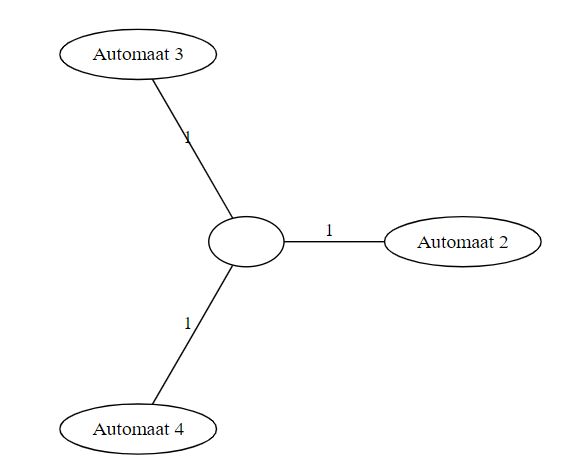 | 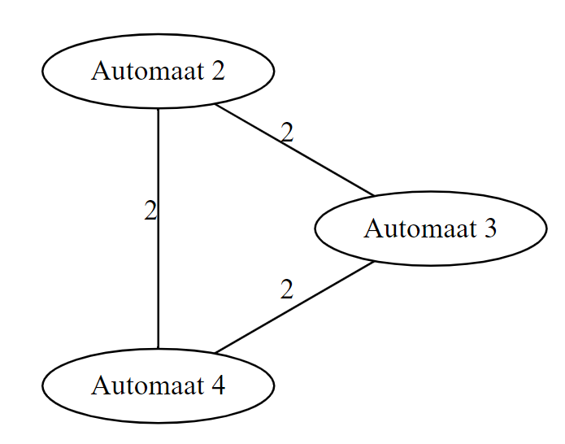 | 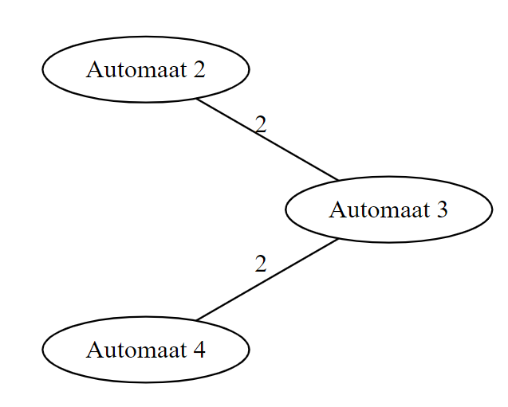 |
|---|---|---|
| Neem deze opstelling, met de middelste node een lege straathoek. | Als we het algoritme van Dijkstra toepassen voor elke 2 automaten krijgen we deze graaf. | Van de vorige graaf is dit de minimaal opspannende boom. Duidelijk geen optimale oplossing. |
Voor ingenieur 2:
Het algoritme van Kruskal zal ervoor zorgen dat elke straathoek verbonden is. Ook diegene waar geen automaten op staan. Hset algoritme maakt geen onderscheid tussen straathoeken met of zonder automaat.
- Gevraagd wordt om voor een gegeven graaf met positieve takgewichten de maximale opspannende boom te bepalen. Bedenk een algemene methode om dit te doen.
Zoek het hoogste takgewicht
- Hieronder ziet u een onderdeel van het stratenplan van Gent (schaal 1:3000), waarop met 2 rode sterren de aula van de Universitcit Gent en de (ingang van de) stadshal werden aangeduid. Bepaal de kortste route van de ingang van de stadshal naar de aula (te voet). Hoeveel bedraagt de afstand ?

Veel plezier hiermee. Ik ga het niet doen.
- Stel dat men opnieuw op zoek gaat naar de optimale route van de stadshal naar de aula. Onder ‘optimaal’ verstaat men nu niet de kortste route qua afstand, maar de route waarlangs zoveel mogelijk cafeetjes te vinden zijn (zonder 2 maal door dezelfde straat te passeren). Kan men dit probleem modelleren als een kortste-pad probleem?
Nee, dit is eerder een langste pad probleem.
- In een computernetwerk (zie onderstaande figuur) wenst men een videoverbinding op te zetten tussen een server (s) en een gebruiker (g). Om de kwaliteit van het videobeeld te optimaliseren, gaat men op zoek naar de route van s naar g waarop zoveel mogelijk bandbreedte (in Mb/s) beschikbaar is. De beschikbare bandbreedte op elke link is weergegeven in onderstaande figuur.

Tot welk gekend grafenprobleem kan men dit probleem herleiden ? Bepaal de optimale route in het hierboven afgebeelde netwerk.
Dit lijkt me een max flow probleem. Ik vind dat een beetje vaag voor hoofdstuk 1 dus misschien ben ik mis.
//TODO
- Zeven steden in Peru zijn enkel via aardewegen met elkaar verbonden (zie figuur hieronder : knopen = steden, takken = aardewegen). Men wenst een asfaltwegennetwerk uit te bouwen tussen deze steden, zodat elke stad bereikbaar is vanuit elke andere stad via asfaltwegen. Om de kosten van graafwerken te beperken, komen enkel de routes van de aardewegen in aanmerking voor asfaltering. Doel is om een zo goedkoop mogelijk asfaltwegennetwerk uit te bouwen (de kosten voor het asfalteren van een aardeweg zijn evenredig met de lengte van de wegen, afgebeeld in de figuur hieronder, uitgedrukt in honderden km).

Tot welk type grafenprobleem kan dit probleem herleid worden?
Minimaal opspannende boom
Ontwerp het asfaltwegennetwerk.
De dikkere lijnen op de foto.
In bovenstaand probleem werd de kost van wegenwerken geminimaliseerd, zonder rekening te houden met hoog oplopende transportkosten bij vervoer langs deze wegen (vanwege grote omwegen die men voor sommige verbindingen dient te maken). Stel dat men daarentegen de transportkosten wil minimaliseren (de kosten van wegennetwerk zijn slechts van verwaarloosbaar belang), Hierbij is er enkel verkeer vanuit de havenstad
‚ naar de andere steden (naar elke stad evenveel), niet tussen de andere steden onderling. Enkel de asfaltwegen laten transport toe, de aardewegen niet.
Tot welk type grafenprobleem kan dit probleem herleid worden ? Motiveer.
Dit lijkt me een kortste pad probleem.
Ontwerp het asfaltwegennetwerk.

Vergelijk de ontwerpen uit b) en d) qua kosten voor wegennetwerken en transportkosten. Verklaring?
De transportkosten van d zijn lager omdat we altijd het kortste pad nemen vanuit
Stel nu dat men bij het ontwerpen van het asfaltwegennetwerk wenst rekening te houden met beide types kosten (kosten voor wegennetwerken en transportkosten). Welk type grafenprobleem ontmoeten we hier ? Motiveer.
Ik zou het echt niet weten //TODO
Misschien de som van de totale padlengte en het totale takgewicht minimaliseren?
- Bepaal straal en diameter van onderstaande graaf. Gebruik hierbij stap voor stap het geziene algoritme, dus geen oplossing ‘op zicht’.

Het algoritme van Floyd geeft de volgende afstandsmatrix
x0, 2, 5, 7, 9, 1, 2, 4, 6, 7, 4, 4, 5, 7, 8, 5, 6, 6, 7, 9,2, 0, 3, 5, 8, 3, 4, 4, 6, 7, 6, 6, 7, 8, 8, 7, 8, 8, 9, 10,5, 3, 0, 2, 5, 6, 3, 1, 3, 4, 6, 5, 4, 5, 5, 7, 8, 7, 6, 7,7, 5, 2, 0, 3, 8, 5, 3, 2, 3, 7, 4, 3, 4, 4, 6, 7, 6, 5, 6,9, 8, 5, 3, 0, 10, 7, 5, 3, 2, 8, 5, 4, 5, 3, 7, 8, 7, 6, 5,1, 3, 6, 8, 10, 0, 3, 5, 7, 8, 3, 5, 6, 8, 9, 4, 5, 7, 8, 10,2, 4, 3, 5, 7, 3, 0, 2, 4, 5, 3, 2, 3, 5, 6, 4, 5, 4, 5, 7,4, 4, 1, 3, 5, 5, 2, 0, 2, 3, 5, 4, 3, 4, 4, 6, 7, 6, 5, 6,6, 6, 3, 2, 3, 7, 4, 2, 0, 1, 5, 2, 1, 2, 2, 4, 5, 4, 3, 4,7, 7, 4, 3, 2, 8, 5, 3, 1, 0, 6, 3, 2, 3, 1, 5, 6, 5, 4, 3,4, 6, 6, 7, 8, 3, 3, 5, 5, 6, 0, 3, 4, 6, 7, 1, 2, 4, 5, 7,4, 6, 5, 4, 5, 5, 2, 4, 2, 3, 3, 0, 1, 3, 4, 2, 3, 2, 3, 5,5, 7, 4, 3, 4, 6, 3, 3, 1, 2, 4, 1, 0, 2, 3, 3, 4, 3, 3, 5,7, 8, 5, 4, 5, 8, 5, 4, 2, 3, 6, 3, 2, 0, 3, 5, 4, 2, 1, 3,8, 8, 5, 4, 3, 9, 6, 4, 2, 1, 7, 4, 3, 3, 0, 6, 7, 5, 4, 2,5, 7, 7, 6, 7, 4, 4, 6, 4, 5, 1, 2, 3, 5, 6, 0, 1, 3, 4, 6,6, 8, 8, 7, 8, 5, 5, 7, 5, 6, 2, 3, 4, 4, 7, 1, 0, 2, 3, 5,6, 8, 7, 6, 7, 7, 4, 6, 4, 5, 4, 2, 3, 2, 5, 3, 2, 0, 1, 3,7, 9, 6, 5, 6, 8, 5, 5, 3, 4, 5, 3, 3, 1, 4, 4, 3, 1, 0, 2,9, 10, 7, 6, 5, 10, 7, 6, 4, 3, 7, 5, 5, 3, 2, 6, 5, 3, 2, 0,
De diameter is het grootste getal in de matrix. = 10 (2-3-8-9-10-15-20).
Om de straal te vinden neem je het maximum van elke kolom (of rij, komt op hetzelfde neer bij Floyd).
Het minimum van al deze waarden is de straal. = 6 (12-7-1-2) (vind je in de 12de rij/kolom).
Ze zijn echt op hun kop gevallen als ze denken dat we dit met de hand gaan doen. Ik heb dit laten genereren op een random website.
- Welke van de volgende grafen zijn vlakke grafen ? (Indien het een vlakke graaf betreft, geef dan een vlakke voorstelling.)
 | Vlak | |
|---|---|---|
 | Vlak | |
 | Vlak | |
 |  | Vlak |
 |  | Vlak |
 |  | Vlak |
 | Max tot |
- Zeven poorten (1-7) van een elektronisch cireuit zouden als volgt verbonden moeten worden: 1 met 2 en 7; 2 met 5 en 6; 3 met 4, 6 en 7; 4 met 6 en 7; 5 met 6 (zie figuur hieronder ter verduidelijking). Is dit mogelijk zodat alle verbindingen in hetzelfde vlak liggen en elkaar niet snijden?
 |  |
|---|
- Bereken voor onderstaande grafen telkens de boven- en ondergrenzen voor het chromatisch getal
en .
| 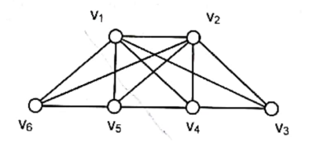 | 4 en 6 |
|---|---|
| 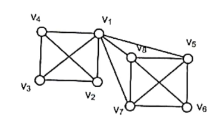 | 4 en 7 |
| 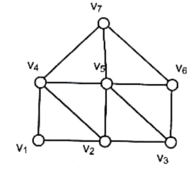 | 3 en 6 |
 | 2 en 4 |
- Bepaal een zo goed mogelijke knoopkleuring voor bovenstaande grafen. Vergelijk dit met de hierboven bekomen boven- en ondergrenzen.
| 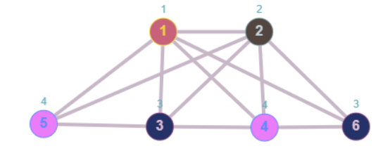 | |
|---|---|
| 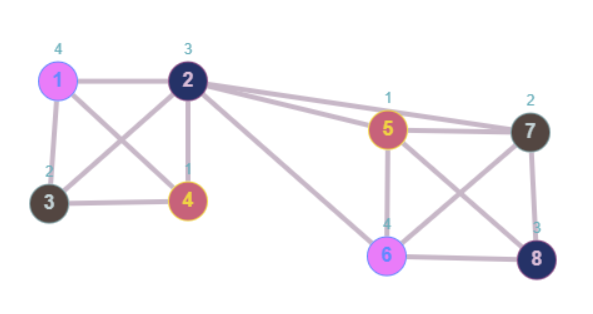 | |
| 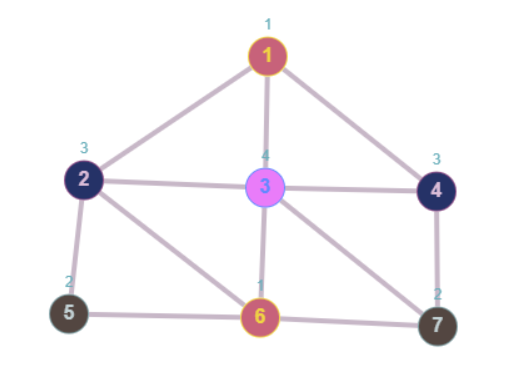 | |
| 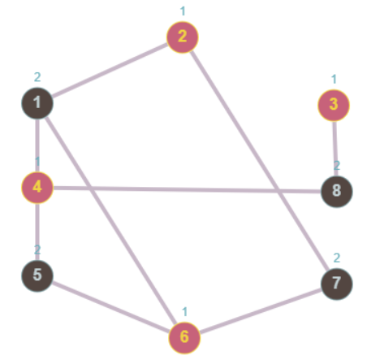 |
- Bepaal een zo goed mogelijke inkleuring voor de onderstaande kaart van Europa.
//TODO
- Vijf acteurs (A-B-C-D-E) willen meespelen in zeven verschillende films (1-7). Acteur A speelt mee in films 1, 2 en 3; acteur B in films 2, 3 en 5; acteur C in films 1 en 5; acteur D in films 4, 6 en 7; acteur E speelt mee in films 1 en 7. De opname van elke film neemt 1 maand in beslag en als eenzelfde acteur in meerdere verschillende films meespeelt, kunnen deze films niet op hetzelfde moment opgenomen worden. Hoeveel maanden zijn er minimaal nodig om alle films op te nemen?
Je kan het omvormen tot een graafkleuringsprobleem. Hieronder een mooie tekening. Elke verbinding stelt een acteur voor. Films die verbonden zijn door de zelfde acteur kunnen niet dezelfde kleur (tijdstip) hebben.
xxxxxxxxxx1->2->3->4->5->6->7 [style="invisible"]1,6 [color=blue]2,7[color=red]4,5 [color=green]3 [color=yellow]1 -> 2 [label=A]1 -> 3 [label=A]1 -> 5 [label=C]1 -> 7 [label=E]2 -> 3 [label=B]2 -> 3 [label=A]2 -> 5 [label=A]3 -> 5 [label=B]4 -> 6 [label=D]4 -> 7 [label=D]6 -> 7 [label=D]
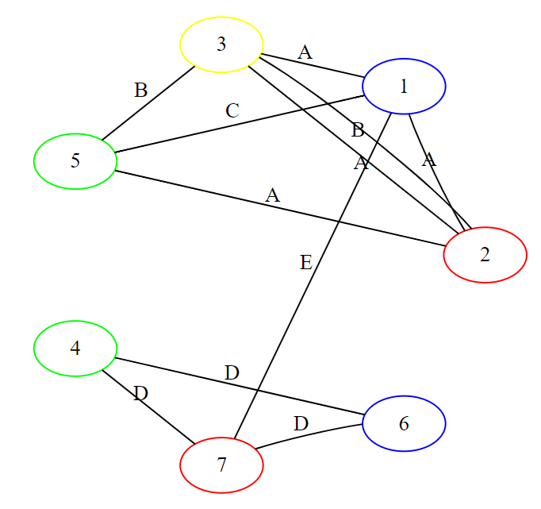
We hebben dus 4 kleuren nodig. Dit komt overeen met 4 tijdstippen.
- Voor de volgende commissies moeten vergaderingen vastgelegd worden:
• commissie A = {Smith, Jones, Brown, Green}
• commissie B = {Jones, Wagner, Cheese, Cummings}
• commissie C = {Harris, Oliver, Smith}
• commissie D = {Harris, Jones, Mason, Larson}
• commissie E = {Oliver, Cummings, Larson}
Zijn drie vergadertijdstippen voldoende om alle commissies te laten samenkomen zonder dat iemand tegelijk op 2 (of meer) vergaderingen moet aanwezig zijn?
xxxxxxxxxx A,D[color=blue] B,C[color=red] E[color=green] A -> B [label=Jones] A -> C [label=Smith] B -> D [label=Jones] B -> E [label=Cummings] C -> D [label=Harris] C -> E [label=Oliver] D -> E [label=Larson]Gelijkaardig aan vorige opgave.
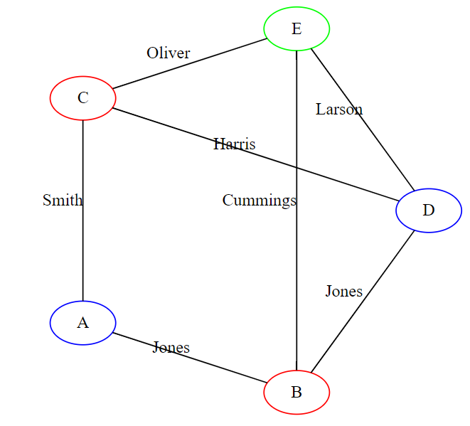
Je kan de graaf kleuren met 3 kleuren, dus 3 tijdstippen volstaan.
- Men wil een appartement (plattegrond zie figuur) volledig behangen, zodat in de kamers die aan elkaar palen een verschillend behang hangt (binnen eenzelfde kamer worden alle muren met hetzelfde behangpapier behangen). Hoeveel verschillende soorten behang heeft men hiervoor nodig?
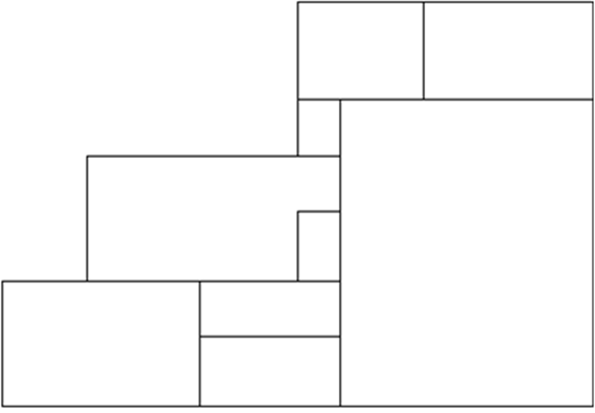

Het kan met 4 kleuren. Meer informatie kan ik niet verschaffen.
- Een architect dient een huis te ontwerpen voor een pasgetrouwd koppel. Het gelijkvloers van het huis dient volgende kamers te bevatten: een woonkamer, een eetkamer, een speelkamer, een keuken, twee slaapkamers, een badkamer en een hal. Het koppel staat erop dat alle kamers een muur gemeenschappelijk hebben met de hal. De keuken moet een muur gemeenschappelijk hebben met de eetkamer, de speelkamer en de badkamer. Beide slaapkamers dienen een muur gemeenschappelijk te hebben met de badkamer en de speelkamer. De woonkamer dient een muur gemeenschappelijk te hebben met de eetkamer en de speelkamer. Is het mogelijk voor de architect om een gelijkvloerse verdieping te ontwerpen die voldoet aan al deze vereisten ? Zo ja, geef zo’n ontwerp. Zo neen, motiveer waarom niet.
Ik denk dat je hier een vlakke voorstelling moet vinden. Dit is het beste wat ik vond.
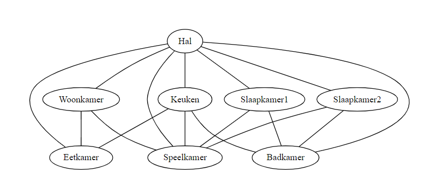
Het lijkt me onmogelijk.
Oke ik heb nog verder nagedacht. Ik denk dat het te herleiden valt naar een kleurenprobleem. Er kunnen in de realiteit maximum 3 kamers alledrie een muur met elkaar delen. Het kliekgetal moet dus kleiner zijn dan 3. Als we de graaf kunnen inkleuren met drie kleuren hebben we bewezen dat dit in ons geval effectief zo is.
We kunnen effectief de graaf kleuren met 3 kleuren;
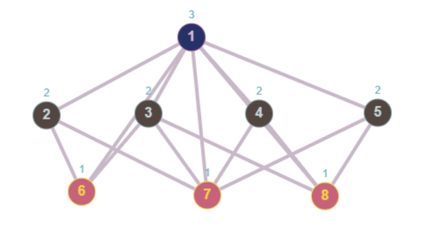
Een GSM-operator heeft gans België verdeeld in een groot aantal cellen van gelijke grootte, waarbij elke cel een regelmatige zeshoek vormt (honingraatpatroon). In het centrum van elke cel bevindt zich een zend- en ontvangstmast. De bandbreedte waarover de operator beschikt, laat hem toe om 63 frequenties te gebruiken voor zendsignalen (voor de eenvoud laten we ontvangstsignalen buiten beschouwing). Bijkomende restrictie is echter dat aangrenzende cellen niet dezelfde zendfrequenties mogen gebruiken, dit om te vermijden dat personen die zich op het grensgebied tussen twee cellen bevinden een mengeling van twee signalen zouden ontvangen. Bedoeling is nu om de zendfrequenties op een zo efficiënt mogelijke manier gelijkmatig te verdelen over de verschillende cellen.
a) Modelleer dit probleem als een grafenprobleem. Welk type probleem betreft het hier? Visueel modelleren volgens onderstaande graaf voor 7 cellen (elk snijpunt is een knoop) Knoopkleuringsprobleem, ondergrens bepalen via kliekgetal
b) Bereken het aantal zendfrequenties dat per cel kan gebruikt worden.
c) Wat als ook cellen die aan eenzelfde cel grenzen (m.a.w. buren van buren) niet van eenzelfde frequentie mogen gebruik maken, hoeveel zendfrequenties per cel blijven er dan nog over?
//TODO
- Beschouw alle grafen met p knopen. Vind een bovengrens voor het aantal elementen dat een koppeling K in een dergelijke graaf kan bevatten.
- Beschouw alle grafen met q takken. Vind een bovengrens voor het aantal elementen dat een koppeling K in een dergelijke graaf kan bevatten
Lijkt mij
- Bepaal een maximumkoppeling voor volgende grafen (het bepalen van een vergrotend K alternerend pad mag op zicht gebeuren):
| 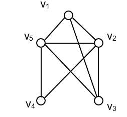 | 1-2, 3-5 |
|---|---|
| 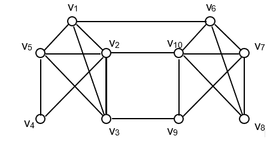 | 1-6, 4-5, 2-10, 3-9, 7-8 |
| 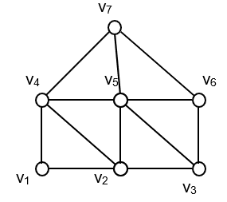 | 1-2, 3-6, 4-7 |
- Welke van de volgende grafen is tweedelig?
 | Tweedelig | |
|---|---|---|
| 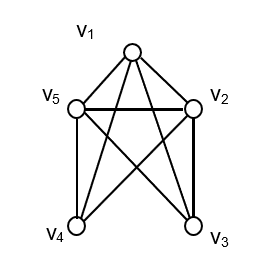 | Niet tweedelig | |
| 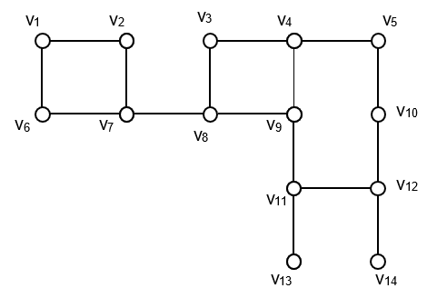 | 1 7 3 9 5 12 13 aan één kant, de rest aan de andere | Tweedelig |
| 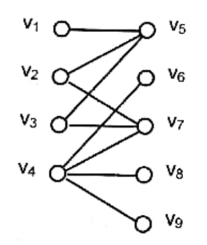 | Tweedelig |
Kan je uit bovenstaande oplossingen een verband leggen tussen het tweeledig karakter van een graaf enerzijds en het type cycli die voorkomen in de graaf?
Elke knoop mag maar tot één cyclus behoren?
- Beschouw alle tweedelige grafen met
knopen in en knopen in . Vind een bovengrens voor het aantal elementen dat een toewijzing in een dergelijke graaf kan bevatten. Is deze bovengrens strikter of minder strikt dan de bovengrens uit opgave 26?
- Bepaal een maximumtoewijzing voor de grafen uit opgave 29 die tweedelig zijn (het bepalen van een vergrotend K-alternerend pad dient volgens het in de cursus beschreven algoritme te gebeuren).
//TODO
- In een primitieve stam bevinden zich een aantal jongens en meisjes van huwbare leeftijd. Elk meisje kent sommige van deze jongens, maar lang niet allemaal. Vraag is: “Is het mogelijk om alle meisjes uit te huwelijken, zodat elk meisje trouwt met een jongen die ze kent?” Bepaal een strategie om dit (algemene) probleem op te lossen. Tot welk graafprobleem kan dit herleid worden?
Beschouw een tweedelige graaf met aan de ene kant jongens en aan de andere kant meisjes. De jongens en meisjes die elkaar kennen zijn verbonden. De maximumkoppeling in deze graaf is de oplossing voor het probleem.
Grafen deel 2
Verband tussen 4 boom-constructie algoritmen
Dit deel van het boek is echt waardeloos. //TODO
Algoritme van Prim
Het algoritme van Prim is simpel, moet het je op de test niet gelukt zijn, het gaat als volgt:
Neem een willekeurige knoop
Iteratie
Voeg alle takken van
Neem de goedkoopste tak uit
- Steek die tak in
- Vervang
- Steek die tak in
Herhaal tot
Dit is hoe ik het heb gedaan op de test toch. In het boek wordt niet super specifiek ingegaan op wat je moet doen met die lijsten. Het kan waarschijnlijk ook anders of beter, maar Ben is niet zuinig geweest met de punten op mijn implementatie voor did deel, dus ik veronderstel dat het ermee door kan.
Eulercircuits

Gegeven een ongerichte of gerichte (multigraaf)
- Elke tak in
- Eindigt op dezelfde knoop als hij begint
Merk op dat je dus wel meerdere keren langs dezelfde knoop mag passeren. We noemen een graaf een Eulergraaf als en slechts als hij een Eulercircuit bevat. Uit de definitie volgen twee stellingen:
- Het circuit zal elke knoop van
- Het circuit zal elke knoop van
- Als de in- en uitgraad verschillend zijn is een Eulercircuit niet mogelijk.
Eulercircuit construeren
We bespreken nu het algoritme om een Eulercircuit te maken. Dit algoritme bewijst kennelijk ook de twee stellingen hierboven.
Kies een wikkekeurige startknoop
Bepaal vanuit
Verwijder alle gebruikte takken uit
Herhaal zolang er nog ongebruikte takken overblijven:
Kies een bezochte knoop
Bepaal vanuit
- Omdat de knoopgraad altijd even is, kan je altijd een nieuwe wandeling vinden zolang er nog ongebruikte takken zijn
Voeg de wandeling toe aan de oplossing
Gerichte lusloze grafen

Een gerichte lusloze graaf is een gerichte graaf, al dan niet geconnecteerd, die geen cycli bevat. In de echte wereld zijn deze nuttig om bijvoorbeeld een sequentie van taken vast te leggen die niet in een bepaalde volgorde moeten uitgevoerd worden, maar waarbij een taak wel kan afhangen van een andere taak.
Topologische rangschikking

Als we alle knopen van deze graaf op een rijtje zetten, op zo een manier dat alle pijlen naar rechts wijzen, bekomen we een topologische rangschikking. Hier bestaat dan ook weer een algoritme voor:
- Zoek een knoop
- Zet
- Verwijder
- Herhaal tot er geen knopen meer zijn
💡 Bewijs
Kunnen we altijd een knoop met ingraad
Kortste pad
Als we gewichten toekennen aan onze takken (al dan niet negatief), kunnen we het kortste pad tussen twee knopen zoeken. Dit is zeer gemakkelijk in een gerichte lusloze graaf.
Bepaal de topologische rangschikking
Ga telkens naar rechts en bepaal voor de huidige knoop de kortste afstand vanuit de startknoop
- Deze vind je door de goedkoopste binnenkomende verbinding te kiezen
Wanneer je de bestemming bereikt, heb ge automatisch ook de kortste afstand gevonden. Als je hebt bijgehouden welke takken tot die afstand lijden, heb je nu ook het kortste pad.
Ik zie net dat ik leiden met een lange ij heb gespeld. Ik ga het zo laten want lijden is wel een goede beschrijving voor dit vak
Langste pad

Het langste pad vinden in een gerichte lusloze graaf is een stuk interessanter. Je kan het in de echte wereld bijvoorbeeld gebruiken om de duur van een project met van elkaar afhankelijke deeltaken te bepalen.
Hier doe je hetzelfde als bij het korste pad, maar geef je de knopen telkens een zo hoog mogelijk label. Als er meerdere start- en eindknopen zijn (knopen met in- of uitgraad
Oefeningen
- Zijn de onderstaande grafen Eulergrafen of niet? Motiveer je antwoord. Zo ja, bepaal m.b.v. het algoritme uit de cursus een Eulercircuit voor deze graaf. Leg stap voor stap uit hoe je dit resultaat bekomt. Schrijf je eindresultaat op als een opeenvolging van knopen (te gebruiken notatie: bv. 3-4-10-6-3)
| 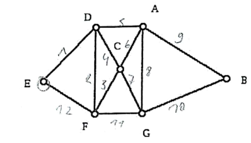 | Bevat een eulercircuit | Eulergraaf |
|---|---|---|
| 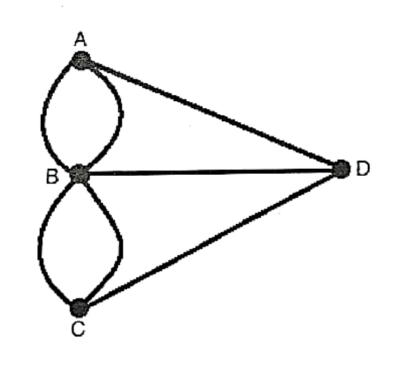 | Knoopgraden zijn niet allemaal even | Geen eulergraaf |
| 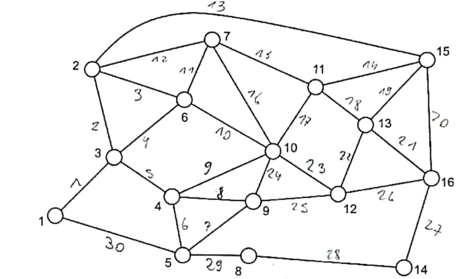 | Bevat een eulercircuit | Eulergraaf |
- Welke van de onderstaande grafen is een gerichte lusloze graaf?
| 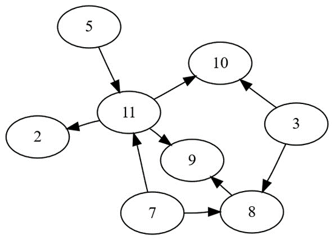 | Ja |
|---|---|
| 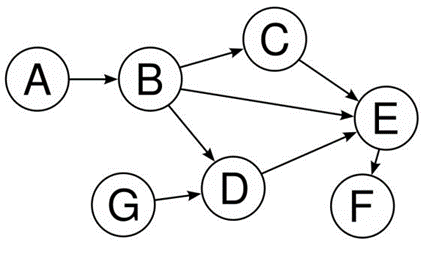 | Ja |
| 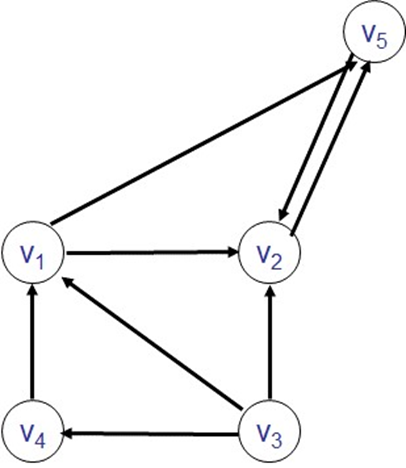 | Nee |
| 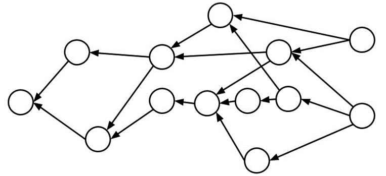 | Ja |
- Bepaal een topologische rangschikking voor elke lusloze graaf in bovenstaande opgave. Zijn er meerdere oplossingen mogelijk?
Er zijn meerdere oplossingen mogelijk als je op minstens één stap in het algoritme meerdere knopen hebt met ingraad
- Een firma steunt een vereniging die geld wil inzamelen voor het goede doel door een record te breken: in exact 13 uur willen de leden met de fiets zoveel mogelijk kilometers afleggen. Er zijn “groep A” leden die 4 uur achtereen fietsen en zo 55 km afleggen, “groep B” leden houden het maar 3 uur vol en leggen zo 47 km af, en “groep C” leden fietsen 2 uur en leggen in die tijd 40 km af. Die afstanden (en tijden) zijn ondeelbaar, bv. een groep A lid kan niet 2 of 2.5u fietsen. Iedereen die nog aan het fietsen is na 10 uur, moet deel uitmaken van groep C. Na 13 uur mag niemand nog aan het fietsen zijn. Er mogen ook nooit twee leden tegelijk aan het fietsen zijn: het is een estafette. Per afgelegde km draagt de firma 1 Euro bij. Bepaal welke leden het best fietsen en in welke volgorde, gezien vanuit het standpunt van de firma: die wil wegens de slechte economische tijden zo weinig mogelijk uitgeven. Tot welk graafprobleem kan dit probleem herleid worden? Wat is het minimaal sponsorbedrag dat je bekomt?
Je kan van achter naar voor een gerichte lusloze graaf opstellen omdat je weet dat je met twee groepen van C moet eindigen.
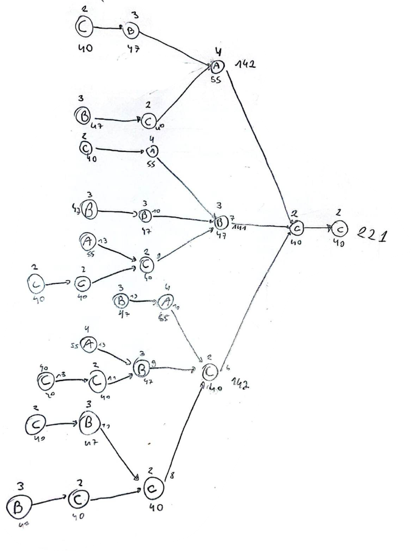
Dan kan je het kortste pad (minste kilometers) gemakkelijk vinden. In dit geval is dat 221km.
Grafen deel 3: network flow problems
Terminologie
We willen een netwerk modelleren als een graaf. We zullen de volgende terminologie hanteren in de rest van de cursus:
Een graaf
Vertices
Edges
- Elke edge
- Elke edge
De orde van een graaf
De grootte van een graaf
De incidence
De adjecency
De degree
Een subgraaf van
- de vertex set een subset is van
- de edge set een subset is van
- de vertex set een subset is van
Een graaf met orde
Voorstelling
We kunnen een graaf op twee manieren voorstellen:
Incidence matrix: een matrix met aantal kolommen voor de edges en rijen voor de vertices
- Als we een waarde toekennen stelt deze een verbinding tussen een vertex en een edge voor
Incidence lists:
- We houden voor elke vertex een lijst van edges bij
Paden en cycli
- Een walk in een graaf is een sequentie van vertices die volgens de edges worden overlopen. Dezelfde edge of vertex mag meerdere keren in het pad voorkomen.
- Een pad in een graaf is een walk waarbij je nooit twee keer dezelfde vertex tegenkomt.
- Een cycle is een walk waarbij je nooit twee keer dezelfde vertex tegenkomt, maar de begin- en -eindvertex hetzelfde zijn.
Cut and cutset
Met het begrip cut bedoel ik in dit deel een edge cut
Neem een graaf
Een cut
Een cutset is de kleinst mogelijke cut. Dit impliceert dat elke strikte subset van de cutset geen cut meer is. Een cut is alleen een cutset als de resulterende subgrafen geconnecteerd zijn. Dit valt makkelijk aan te tonen (maar laten ze weg in de cursus om ons te trollen).

Eerst een voorbeeld. Als je in deze graaf een cut maakt die resulteert in [a,b,c] en [d,e], is één van de twee resulterende subgrafen niet geconnecteerd. Het is namelijk ook geen cutset, want de grootte van een cutset van de graaf is duidelijk
💡 Bewijs
Algemeen (bewijs uit contrapositie). We veronderstellen cutset van een graaf, waarvan één van de resulterende subgrafen niet geconnecteerd is. Het feit dat eentje niet geconnecteerd is impliceert dat we een kleinere cut zouden kunnen nemen van de originele graaf. Hier heb je de contradictie.
Nu hebben we bewezen dat de twee resulterende subgrafen van een cutset beide geconnecteerd moeten zijn.
De definities voor vertex cut en vertex cutset zijn analoog. Een vertex cut is een verzameling vertices die er voor zorgen dat de graaf niet meer geconnecteerd (of de triviale graaf wordt*) is als je ze weghaalt. Een vertex cutset is de minimale vertex cut.
 *: als je in deze graaf de vertex cutset neemt, is het resultaat de triviale graaf. Deze is wel geconnecteerd, dus daarom de uitbreiding op de definitie.
*: als je in deze graaf de vertex cutset neemt, is het resultaat de triviale graaf. Deze is wel geconnecteerd, dus daarom de uitbreiding op de definitie.
Connectivity
De edge connectivity van
De vertex connectivity
Ik denk dat het woord minimum hier zelfs overbodig is, aangezien een cutset altijd minimaal is.
💡 Bewijs
Het valt te bewijzen dat
Stel dat we een vertex cutset
We veronderstellen nu dat
Koppel elke edge in de edge cutset
- Het verwijderen van
- Aan onze edges hebben we
- Dit betekent dus dat als we
- Het verwijderen van
Digraph
Een digraph bestaat uit een vertex set en een arc set. Elke arc is een geordend paar vertices.
De orde (order) van een digraph is het aantal vertices.
De grootte (size) van een digraph is het aantal arcs.
De from-incidence
De to-incidence
De out-degree
De in-degree
De from-adjacency
De to-adjacency
Je kan een digraph op twee manieren voorstellen, analoog aan gewone grafen:
- Incidence matrix
- Incidence lists
Paths en cycles zijn ook hetzelfde als bij ongerichte grafen. Buiten dat je ook een semipath, een semiwalk en een semicycle kan hebben. Hier wordt de richting van de arcs niet speciaal gevolgd. Bij een gewone path, walk of cycle wel.
Een digraaf is strongly connected als er voor elk paar vertices een pad in beide richtingen bestaat.
Een digraaf is weakly connected als er voor elk paar vertices een pad in minstens één richting bestaat.
Als voor elk paar vertices
Nee, je kan makkelijk een tegenvoorbeeld vinden:

Minimum spanning tree problem
Een tree
Een subgraaf van een geconnecteerde graaf
Kruskal
Het algoritme van Kruskal beschrijft en manier om een minimum spanning tree te vinden. Dit is een spanning tree van
- Verwijder alle edges uit
- Voeg telkens de kleinste edge terug toe die geen lus vormt.
- We zijn klaar als we alle vertices hebben verbonden
Shortest path problem
Unweighted (di)graph: Moore
In een ongewogen graaf is de afstand tussen twee vertices gelijk aan de kleinste hop-count. Je kan gemakkelijk de kortste afstanden vanuit één vertex bepalen door een breadth-first-search.
- Zet de afstand van de startknoop op
- De afstand van al zijn buren op
- De afstand van alle buren van de buren (die nog geen afstand hebben) op
- ...
Weighted (di)graph: Dijkstra
Dit heb ik hier heel mooi uitgelegd. Het is belangrijk om te weten dat dit algoritme alleen werkt als onze graaf alleen positieve grwichten bevat.
Weighted (di)graph with negative weights: Ford, Bellman and Moore
Het algoritme van Ford, Bellman en Moore is een label correcting algoritme. Dit betekent dat het algoritme alle labels met afstanden als tijdelijk beschouwt tot het einde, waar ze allemaal tegelijk permanent worden.
Maak een lege lijst
- zet in
- Voeg de beginknoop toe in
- zet in
Zolang
Neem het eerste element
Doe voor elke buur
- Update
- Als
- Update
All-pairs shortest path problem: Floyd
Om het kortste pad te kunnen vinden tussen alle combinaties van vertices, zouden we het algoritme van Dijkstra voor alle vertices kunnen draaien. Dit is misschien een beetje tijdverspilling, er bestaat een beter algoritme: Floyd.
- Maak een
- Zet de diagonaal op
- Stel alle rechtstreekse paden in
- Zet de rest op
- //TODO
Omdat we in dit algoritme drie geneste for-loops hebben, krijgen we een complexiteit van
Maximum flow problem
Network flow
We willen een soort abstract model maken van een netwerk. Hierbij gebruiken we de term flow om overdracht van gegevens in ons netwerk voor te stellen. We stellen het netwerk voor als een digraaf.
- Elke pijl
- Elke pijl heeft bovendien een capaciteit
- De flow is dus de hoeveelheid gegevens die doorheen de links van ons netwerk kan.
Als resultaat modelleren we ons netwerk met een gewogen, gecapactiteerde digraaf. Hiervoor hanteren we vanaf nu de term netwerk.
Flow is een functie
Flow conservation constraints: de inflow min de outflow van
Het komt erop neer dat in een node in ons netwerk de inflow en outflow gelijk moeten zijn, behalve als:
De node iets produceert (supply):
- Typisch is dit de source, de beginnode
De node iets verbruikt (demand):
- Typisch is dit de sink, de eindnode
- Capacity constraints: De flow in een node mag niet hoger zijn dan de capaciteit van die node
Maximum flow problem
We hebben een netwerk met een client op een bepaalde plek en een server op een andere. Als we willen wat de hoogste snelheid is waarmee we een pakketje van client naar server kunnen krijgen, hebben we een maximum flow probleem. We kunnen dit probleem als volgt formuleren.
Neem een gecapaciteerde digraaf
- De source
- De sink
We willen de maximum flow van
- Maximaliseer
- We zoeken dus een zo hoog mogelijke
Residual network

In de cursus zijn ze abstract, maar ik ga het hier proberen uit te leggen aan de hand van een voorbeeld. We zitten in een scenario (bijvoorbeeld in het midden van een algoritme), waar we aan onze links al een bepaalde flow hebben toegewezen.
- Elke link heeft een flow
- Er kan maar
- We kunnen ook
Neem de bovenste link vanuit de source in het voorbeeld. Deze heeft flow
- Dit is de residual capacity
- Dit is de residual capacity
Wanneer
Flow augmenting path algorithm
We willen een manier vinden om de grootst mogelijke flow in ons netwerk te bepalen. Dit kan met het flow augmenting path algorithm. Een flow augmenting path is pad van de source naar de sink waarvoor de residual capacity
- De residual capacity
Het algoritme is simpel. Je begint van een netwerk waar alle flows op nul staan. Je zoekt een flow augmenting path en past het residunetwerk aan volgend dat pad. Nu ga je door tot je geen flow augmenting path meer vindt.
Relationship between original and residual network? //TODO of toch is bekijken
Maximum-flow minimum-cut theorem

We kunnen ons maximum flow probleem herformuleren als een minimum-cut probleem.
- Van alle cuts in het netwerk die de source en sink scheiden, zoek de cut met de minimale capacity.
Neem een netwerk
- De maximum flow van
In essentie willen ze ons hier vertellen dat de flow in ons netwerk gelimiteerd is door de smalste bottleneck die je kan vinden in het netwerk. Het vinden van een minimum cut is in andere woorden het vinden van de bottleneck van het netwerk. In het plaatje hierboven is de minimum cut, alsook de maximum flow gelijk aan
Edge connectivity
De edge-connectivity is de kleinste hoeveelheid edges die je moet verwijderen opdat de graaf niet meer samenhangend is.
Van een graaf
- Met
- Met
We kunnen de maximum-flow minimum cut gebruiken om
Als we alle capaciteiten van
- De minimum kardinaliteit van een
- De minimum kardinaliteit van een
Nu weten we dankzij de vorige paragraaf dat de minimum cut hetzelfde is als de maximum flow. Als we nu elke edge in
- We berekenen de maximale flow
- De minimale waarde voor
- We berekenen de maximale flow
Vertex connectivity
De vertex-connectivity is de kleinste hoeveelheid vertices die je moet verwijderen opdat de graaf niet meer samenhangend is. Je kan het algoritme voor het flow augmenting path ook gebruiken om de vertex connectivity
De minimum kardinaliteit van een
- Als we
- Als we

💡 Bewijs
We kunnen bewijzen dat
Maak van
Maak daar een digraaf
Verander deze in een graaf
- Elke arc naar
- Elke arc vanuit
- Maak een arc van elke
- Elke arc naar
De maximale flow tussen

Ik vind het een beetje moeilijk om dit in mijn kop te krijgen, dus ik heb wat extra onderzoekwerk gedaan. Ik dacht voor de lol even de limieten van chatGPT op te zoeken en stelde hem de volgende vraag:
Why is the maximum flow from v'' to w' in a modified graph where we change every link into two antiparallel links with capacity set to one and replace every vertex v by v' and v'' with every arc incident to v, made incident to v' and every arc incident from v, made incident from v'', also adding an arc from v' to v'' equal to the amount of pariwise vertex-disjoint v-w paths in the original graph?
Hij gaf mij een redelijk duidelijk antwoord. Ik parafraseer.
Omdat de capaciteit van elke edge in het netwerk op
Valt wel met een korrel zout te nemen. Misschien later nog is nakijken //TODO
Minimum cost flow problem
We hebben een client en server die met elkaar verbonden zijn via een bepaald netwerk. We hebben een bepaalde hoeveelhaid data (algemeen een demand
Dit valt te veralgemenen als het minimaliseren van de volgende betrekking:
Oftewel de som van de flow
De demand is enkel verschillend van nul in de source en sink nodes::
En de flow mag niet hoger zijn dan de capaciteit van een link.
Residual network

Hier breiden we het idee van een residunetwerk uit voor ons probleem. In essentie doen we exact hetzelfde als hier, maar nemen we de cost mee. De toegevoegde arcs (in de tegenovergestelde richting) geven we de tegenovergestelde cost.
Busacker and Gowen
Het algoritme van Busacker en Gowen biedt een manier om de minimal cost flow
Het algoritme identificeert kortste augmenterende paden in het residunetwerk en voegt flow toe totdat de demand
We hebben een bepaalde demand
Zolang
Vind het kortste augmenterende pad
- Met Ford-Bellman-Moore
- De toe te voegen flow is het minimale residu in het pad
- Als dit groter is dan de demand, dan moeten we alleen de resterende demand toevoegen
Verhoog de flow
Update het residunetwerk
Voeg de toegevoegde flow bij
Meerdere supply-demand vertices

Wat als we nu meerdere knopen hebben met een bepaalde supply/demand? De functie

- Een super-supply
- Een super-demand
- Nu kunnen we Busacker-Gowen toepassen tussen
Multi-commodity flow problems
Tot nu toe was ons minimal cost flow probleem een single-commodity probleem. Dit komt bijvoorbeeld overeen met een netwerk oliepijpen. De olie is overal hetzelfde. Als we aan de andere kant een telefoonnetwerk beschouwen, hebben we een multi-commodity probleem, want niet elk telefoongesprek is hetzelfde. Je wilt niet dat als je iemand belt, je verbonden wordt met iemand anders.
We kunnen dit probleem als volgt formuleren:
Neem een netwerk
Een set commodities
elke commodity
Nu kunnen we in elke arc een flow voor een specifieke commodity
De te minimaliseren functie is nu:
Oftewel de som van de flow
De ingaande min de uitgaande flow in een vertex voor een commodity is dan gelijk aan de demand voor die commodity in die vertex:
En de flow voor alle commodities mag niet hoger zijn dan de capaciteit van een arc.
Er bestaan blijkbaar niet echt efficiënte oplossingen om problemen van deze aard op te lossen. Hier eindigt de cursus. Bedankt voor uw tijd.
Oefeningen
Connectiviteit en disjuncte paden:
Bepaal de knoop- en takconnectiviteit van onderstaande grafen
| 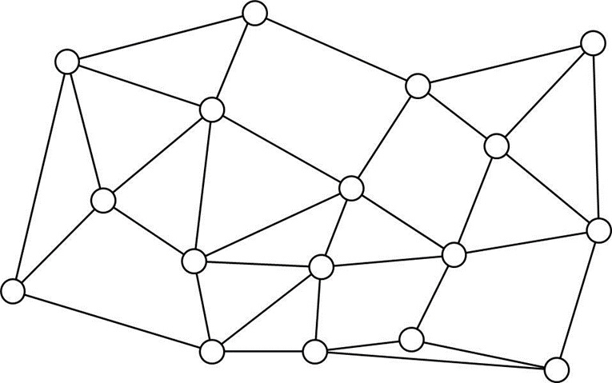 | Disjuncte paden: 3 | ||
|---|---|---|---|
| 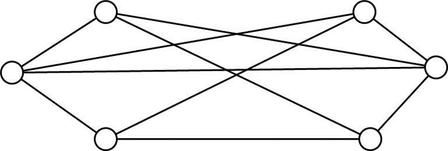 | Disjuncte paden: 3 |
Voor beide bovenstaande grafen: bepaal het maximaal aantal takdisjuncte paden tussen de meest links gelegen en de meest rechts gelegen knoop. Wat is het verband met de takconnectiviteit?
Het aantal takdisjuncte paden is even groot als de takconnectiviteit.
Analoog voor de knoopdisjuncte paden.
Graad versus connectiviteit:
(a) Als voor alle knopen van een willekeurige ongerichte (geconnecteerde) graaf de knoopgraad
is, volgt daaruit dan dat de knoop-en link-connectiviteit van deze grafen ? Zo ja, bewijs. Zo neen, geef een tegenvoorbeeld. (b) Teken een ongerichte graaf waarvan alle knopen exact een graad = 2 hebben en waarbij eveneens de knoop- en link-connectiviteit 2 is. Doe hetzelfde voor 3 en 4.
a)
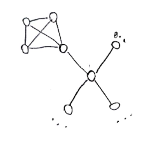
Voor deze graaf is de knoopgraad altijd groter dan 3. De knoopconnectiviteit is echter maar 1.
b)
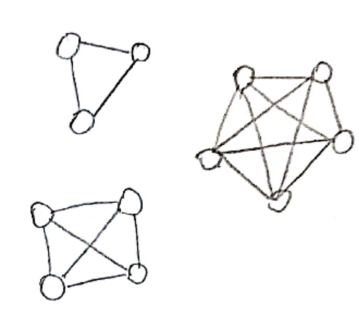
Routering in glasvezelnetwerk:
Beschouw een optisch transportnetwerk (zie figuur). Bij dit netwerk wordt gebruik gemaakt van N golflengten op elke vezel, elke golflengte transporteert 1 Gbit/s. De kost om een golflengte op een vezel te gebruiken is weergegeven naast de links in kEuro. Een operator wenst nu zoveel mogelijk verkeer op te zetten tussen A en B, en dit met een maximaal budget van 75 kEuro.
Los de volgende punten op:
(a) Stel dat het aantal golflengten op elke vezel onbeperkt is (N =
). Bespreek welke methode de operator kan gebruiken om te bepalen hoeveel verkeer (in geheel aantal Gbit/s) hij kan opzetten (binnen het budget van 75 kEuro) (b) Bereken de hoeveelheid verkeer en de bijhorende totale kost.
(c) Geef de paden weer (en de bijhorende kost en gebruikte capaciteit) die opgezet worden in het optisch transportnetwerk.
(d) Stel nu dat het aantal golflengten op elke vezel wel beperkt is: N = 5. Bespreek welke methode de operator nu kan gebruiken om te bepalen hoeveel verkeer (in geheel aantal Gbit/s) hij kan opzetten (eveneens binnen het budget van 75 kEuro)
(e) Bereken de hoeveelheid verkeer en de bijhorende totale kost.
(f) Geef de paden weer (en de bijhorende kost en gebruikte capaciteit) die opgezet worden in het optisch transportnetwerk.
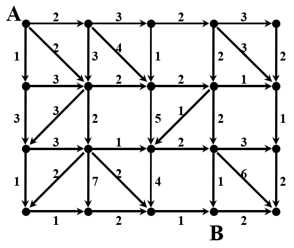
a)
b)
c)
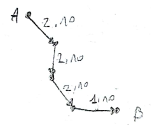
d) 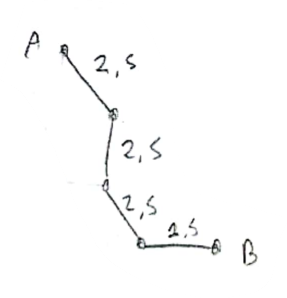
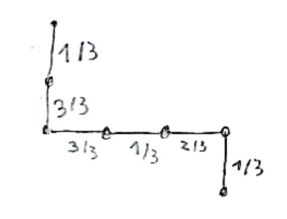
e)
Routering in internet:
Beschouw een klein netwerk van IP-routers. De routers worden verbonden met een aantal unidirectionele links zoals weergegeven in de figuur. De afstanden van de verbindingen tussen de routers zijn weergegeven in de figuur (naast de links). In de routers zullen de pakketten een vertraging oplopen (de gemiddelde vertraging is opgegeven in de routers). Op de links treedt er geen vertraging op.
Los de volgende punten op:
(a) Welke route zal men volgen om de pakketten van A naar B te versturen, indien men zo weinig mogelijk afstand wil afleggen? Bespreek de algemene oplossingsmethode en geef de oplossing.
(b) Welke route zal men volgen om de pakketten van A naar B te versturen, indien men zo weinig mogelijk vertraging wenst te hebben? Bespreek de algemene oplossingsmethode en geef de oplossing.
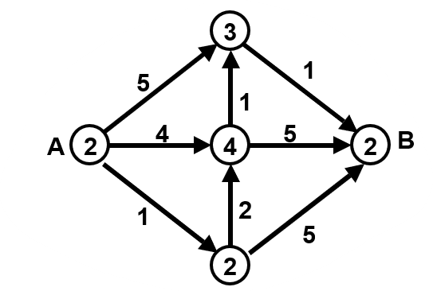
a) Kortste pad probleem
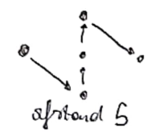
b) Min cost probleem
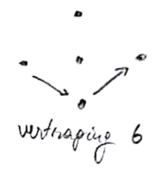
Ontwerp topologie vezelnetwerk:
Beschouw een TV-operator. Deze wenst optische vezel te introduceren in zijn coax netwerk om aldus een grotere bandbreedte te bekomen (hybrid fiber/coax netwerk). Hiertoe zal hij naar elke straathoek (= elk kruispunt) één optische vezel leggen, vertrekkend vanuit de head-end die op straathoek A geplaatst is. Bereken de layout van het kabelnetwerk dat hij zal leggen (de kabels bevatten de vezels). Hierbij zal hij de lengte van de kabel wensen te minimaliseren om aldus de graafkosten te beperken. De onderstaande figuur geeft het stratenplan weer: lijnen zijn de straten (met opgegeven lengte) en knopen zijn de straathoeken.
Opmerking: een kabel kan een onbeperkt aantal vezels bevatten en een kabel kan opgesplitst worden in kleinere kabels.
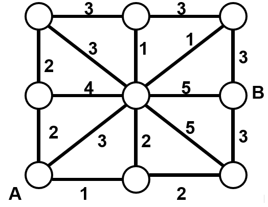
Los de volgende punten op:
(a) Bespreek de algemene oplossingsmethode
(b) Bereken de oplossing (= layout van het kabelnetwerk)
(c) Wat is de totale kabellengte
(d) Als de TV-operator zijn head-end in B zou plaatsen, zou het resultaat (layout kabelnetwerk, lengte kabel) dan hetzelfde zijn?
(e) Wat is de totale gebruikte vezellengte als de head-end in A staat? En als hij in B staat? Bekomt men met de gebruikte oplossingsmethode gegarandeerd de kleinste vezellengte? Leg uit waarom (niet).
(f) Hoe zou men de totale vezellengte vanuit een gegeven head-end (bv. A) kunnen minimaliseren (zonder dat men de kabellengte moet minimaliseren)? Schets de oplossingsmethode en bepaal de oplossing.
a) Minimale opspannende boom met het algoritme van Prim
b)
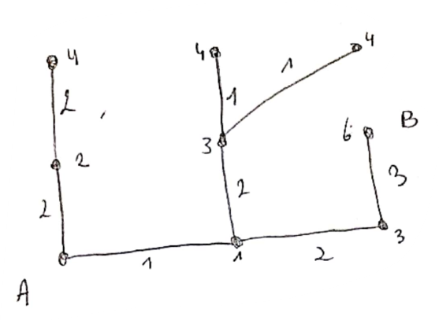
c) De totale kabellengte bedraagt 14
d) Geen verschil, de startknoop maakt niet uit bij het algoritme van Prim.
e) 27 als de head-end in A staat
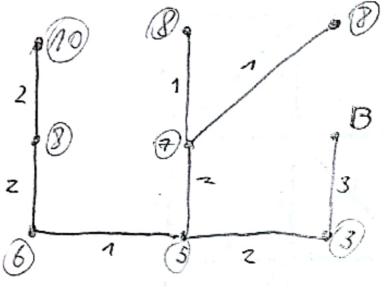
55 als de head-end in B staat. Kan verschillen want er zijn wel meerdere minimale opspannende bomen.
f) Door met Dijkstra alle kortste paden te berekenen en dan een vezel aan te leggen voor elk pad.
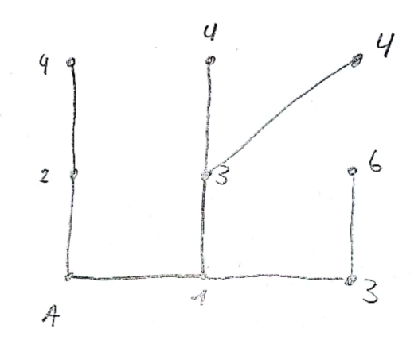
De totale vezellengte bedraagt dan 27.
------------Strings------------
Gegevensstructuren voor Strings
Digitale zoekbomen

Een digitale zoekboom is een gegevensstructuur die je kan gebruiken om sleutels op te slaan. Hier zijn sleutels dan strings van sleutelelementen (bv. een bitstring) en komen altijd uit een eindig alfabet. De sleutels bevinden zich in de knopen.
 |  |
|---|
Het voorbeeld hierboven maakt het wat duidelijker. Als eerste wordt A toegevoegd en komt dus in de wortelknoop. Wanneer we S toevoegen, wordt de 0-de bit van S beschouwd, deze is 1 en we moeten dus naar rechts. Daar was (toen) nog een vrije plaats, dus hebben we S daar neergezet. Hetzelfde voor E, maar dan naar links. Je moet dus in elke stap de plek in de sleutel beschouwen die overeenkomt met hoe diep je in de boom zit, en dan ook elke keer kijken of die sleutel overeenkomt met de sleutel van de knoop waar je je bevindt.
Binaire tries

Het verschil tussen een binaire trie en een digitale zoekboom is dat bij een binaire trie de sleutels enkel worden opgeslagen in de bladeren. Omdat er in de tussenliggende knopen geen sleutels zitten, moet je in totaal minder sleutelvergelijkingen doen.
Het basisprincipe lijkt op dat van digitale zoekbomen, bij 0 ga je naar links, en bij 1 naar rechts. Je sleutel is gevonden als je in een bladknoop komt. Als je vast komt te zitten, zit de sleutel niet in de trie.


Je kan deze gegevensstructuur lichtelijk optimaliseren door overbodige tussenliggende knopen weg te knippen, en enkel een nieuwe splitsing toe te voegen als dit echt nodig is. Dit zie je in de bovenstaande plaatjes. Dit spaart geheugenruimte, maar maakt toevoegen en verwijderen wat complexer.
Patriciatries

Patriciatries trachten de hierboven aangekaarte problemen te verhelpen. Blijkbaar staat Patricia voor 'Practical Algorithm to Retrieve Information Coded in Alphanumeric'. Cool.
Elke knoop heeft een getal dat aangeeft met welke bit er vergeleken wordt. Deze index mag naarmate je dieper in de boom gaat nooit kleiner worden.
Pointers kunnen naar boven wijzen.
- Tijdens het zoeken doen we geen sleutelvergelijkingen, pas als een pointer naar boven wordt gevolgd, vergelijken we de te zoeken sleutel met een knoop.
De boom hierboven is het resultaat van het toevoegen van de volgende sleutels:

Zoals je ziet, is er bijvoorbeeld bij R een pointer naar boven. Als de 0de bit 1 is en de 4de ook, is de enige optie S. Ik snap wel hoe dit werkt, maar niet hoe je deze boom algoritmisch zou moeten construeren. De slides schieten mij hier tekort. //TODO
Meerwegstries

Een meerwegstrie is een uitbreiding van een gewone trie. Er zijn gewoon meer keuzes per niveau. Dit kan handig zijn, maar je moet wel op een paar dingen letten:
- Als je knopen veel nullpointers bevatten, kan je een gelinkte lijst gebruiken om de kinderen in bij te houden.
- Als we te veel interne knopen hebben, kunnen we symbolen van het alfabet samennemen.
Ternaire zoekbomen

Bij een ternaire zoekboom heeft elke knoop drie deelbomen. Deze splitsen de zoekruimte op in kleiner, gelijk aan of groter dan de voordien bezochte knoop.
- Belangrijk om te weten is dat als je verder gaat in de linkse of rechtse deelboom, je opnieuw hetzelfde element van de sleutel gebruikt.
- Ga je verder in de middelste deelboom, gebruik je het volgende element van de sleutel.
Codes
Een code is een manier om data op te slaan in een bepaald formaat. Een voorbeeld van een code is ASCII. Er zijn verschillende soorten codes:
Variabele lengte code
- Niet elke letter krijgt evenveel bits
- Dit maakt willekeurige toegang moeilijk
Prefixcode
- Geen enkel codewoord is de prefix van een ander codewoord
Universele code
- Kan je gebruiken, onafhankelijk van de brontekst die je wilt coderen
We gaan wat verder in op universele codes.
Elias' Gammacode

De Elias'
Ik vind het niet goed uitgelegd in de slides. Het aantal nullen vooraan stellen eigenlijk gewoon de grootte-orde van het te lezen getal voor met een macht van 2. Als je 3 nullen leest, is de 1 die erop volgt gelijk aan
Om te coderen zet je dus gewoon bij een getal van
Elias' Deltacode

De Elias'
Neem de binaire representatie van je getal
Het eerste getal is altijd een 1, deze kan je weglaten
In plaats van de
- Dit is gewoon een kortere manier om
- Dit is gewoon een kortere manier om
Dan neem je uiteindelijk een klein beetje minder plaats in.
Fibonnaci-code

We kunnen elk natuurlijk getal voorstellen als een som van niet-opeenvolgende fibonaccigetallen. De i-de bit in de codering komt dan overeen met het i-de fibonaccigetal. Dit is vrij simpel als je kijkt naar een voorbeeld:
Op het einde wordt telkens een 1 toegevoegd, want we hebben nooit twee opeenvolgende fibonnacigetallen nodig, dus weten we dat je code hier stopt.
Huffmancode
Een voorbeeld van een prefixcode met variabele lengte is de Huffmancode. Om een bericht met deze code te encoderen moeten we de volgende stappen ondernemen:
We stellen een Huffmanboom op vanuit de tekst BACADAEAFABBAAAGAH
- Maak een frequentietabel van je tekst
- Merge in die tabel telkens de twee dingen met de laagste frequentie
- Dit wordt dan je boom

Compressie
Huffman
Talen, grammatica's en automaten
Talen
Talen worden opgebouwd aan de hand van een alfabet. Een alfabet
Stel je voor dat we beschikken over twee strings
Het omgekeerde van
De concatenatie van
- Het alfabet van onze twee strings is
- Dan is
- Het alfabet van onze twee strings is
Een taal
- Bijvoorbeeld:
We hebben hier ook nog enkele definities met cool wiskundige symbolen:
Disjunctie:
- Dit is de unie van
- Dit is de unie van
Sluiting
- Een arbitrair aantal keren
- Een arbitrair aantal keren
Complement
- Alle strings volgens het alfabet
- Alle strings volgens het alfabet
Grammatica's
Een grammatica is een set regels waarmee je strings binnen een bepaalde taal kan construeren. Een grammatica geeft ons een herschrijfsysteem met:
- Terminale symbolen zoals
- Niet terminale symbolen zoals
- Herschrijfregels voor niet-terminale symbolen zoals
- Een startsymbool
We kunnen de herschrijfregels herhaaldelijk toepassen totdat we beschikken over een eindpunt dat enkel terminale symbolen bevat. Hieronder een klein voorbeeldje vanuit de slides:
Neem de volgende taal:
// TODO ik ga verder ik heb effe geen zin om dit uit te typen
Automaten
Een automaat is een abstract model van een digitale computer. Deze heeft geheugen en bevat een controle-eenheid die zich in één van een eindig aantal toestanden kan bevinden. Een automaat verwerkt strings. Hij zet dus een invoerstring om in een uitvoerstring.
Reguliere expressies
Ik ga je de verschillende symbolen die je kan gebruiken in een reguliere expressie besparen. Als je ze nog niet kent ondertussen ben je een loser. In dat geval verwijs ik je door naar de slides.
Reguliere automaten
Reguliere automaten komen overeen met reguliere expressies. We behandelen deterministische en niet-deterministische automaten.
Deterministische automaten

Een deterministische automaat werkt over een alphabet
Verder bestaat er ook een overgangsfunctie
- Start bij de starttoestand
- Lees één voor één de invoersymbolen, volg telkens de pijl die overeenkomt met het gelezen symbool
- Kijk of je je in een eindtoestand bevindt. De invoerstring wordt enkel aanvaardt als de automaat zich na de inlezing in een eindtoestand bevindt.
Niet-deterministische automaten

Deterministische automaten kunnen vereenvoudigd worden tot niet-deterministische automaten. Deze werken op dezelfde manier. Het kenmerkende verschil zijnde de mogelijkheid om zich tezelfdertijd in meerdere toestanden te bevinden. Een niet-deterministische automaat kan dus simultaan meerdere overgangen maken.
Het voordeel van deze automaten is dat het veel gemakkelijker is om ze te construeren vanuit een reguliere expressie, alsook af te leiden welke reguliere expressie ze beschrijven.
Minimale automaten

Deze automaat is een voorstelling van de reguliere expressie:
Als we twee knopen kunnen vinden die niet van elkaar te onderscheiden zijn, kunnen we ze samennemen tot één knoop:
- Maak een tabel van alle koppels knopen.
- Alle koppels die een niet-eindtoestand en een eindtoestand bevatten kunnen we al schrappen, deze verschillen sowieso van elkaar. Duid ze in je tabel aan met een ster.
Nu hebben we nog drie koppels over. We beschouwen
- Lezen we in
- Lezen we in
- Ze zijn dus verschilend en we kunnen
- Lezen we in
Hetzelfde principe voor
Nu proberen we
- Lezen we in
- Lezen we in
- We kunnen geen onderscheid maken tussen deze twee toestanden en kunnen ze bijgevolg samennemen.
- Lezen we in
We nemen deze twee toestanden samen en krijgen het volgende resultaat:

Automaat opstellen uit een regexp
Concatenatie
Herhaling
Of

- Je kan ook de


Chomsky hiërarchie
Ik weet niet wat dit is, maar ik zet het erbij for future reference.
- Regulier
- Context-vrij
- Context-gevoelig
- Recursief
- Recursief opsombaar
Substring search
We hebben een patroon
Naïeve oplossing
Een naïeve oplossing zou

We overlopen telkens onze hele
Knuth-Morris-Pratt
In het algoritme van Knuth-Morris-Pratt hergebruiken we de informatie over verleden matches om onze zoektocht efficiënter te maken. Dit doen we door voor ons patroon een deterministische reguliere automaat op te stellen. Dit doen we door het patroon met zichzelf te vergelijken, dit doen we aan de hand van een KMP-tabel. In dit voorbeeld maken we de tabel voor het patroon:
A B A B A C
De string is 6 karakters langs, dus onze automaat zal 6 toestanden hebben. Zet een marker op de 0-de kolom, deze marker toont naar welke toestand we terug moeten gaan als we een mismatch tegenkomen voor het volgende karakter, maar we wel al een deel hebben gelezen dat nog kan matchen met ons patroon. We hebben in dit geval 3 mogelijke karakters en stellen de tabel op als volgt:
| Tabel | Stap |
|---|---|
 | Lezen we A, dan mogen we naar toestand 1. |
 | We kopiëren de kolom met de marker naar de eerstvolgende lege kolom. |
 | Als we in kolom 1 een B lezen, moeten we naar 2. In de kolom van de marker staat B op 0, de marker mag blijven staan. |
 | Kopiëer de kolom met de marker. |
 | Als we een A tegenkomen mogen we naar de volgende toestand (3). |
 | In de kolom van de marker staat A op |
 | Kopiëer de kolom van de marker. |
 | Als we een B lezen gaan we naar toestand 4. |
 | In de kolom van de marker wijst B naar 3, verplaats dus de marker. |
 | We kopiëren de kolom met de marker. |
 | Als we een A lezen gaan we naar toestand 5. |
 | In de kolom van de marker wijst A naar 3, verplaats de marker. |
 | Kopiëer de kolom van de marker. |
 | Als we een C lezen, mogen we naar de eindtoestand en hebben we de string gevonden. |
Ik durf voor een aanzienlijk bedrag te wedden dat we deze tabel moeten opstellen op het examen.
Iets abstracter, kan je dit proces samenvatten met een paar regels:
Initialiseer de tabel met even veel kolommen als karakters in de string
Maak een rij voor elk uniek karakter
Zet de marker op de
0-de kolomZet allemaal nullen in de eerste kolom, zet de rij van het eerste karakter op
1.Herhaal voor elk karakter
- Kopieer de kolom met de marker
- Verander het cijfer van het karakter naar het volgende nummer
- Verplaats de marker naar het nummer van het karakter (in de kolom van de marker)
Wil je iets leuks weten. Het gemiddelde boek van 300 pagina's heeft ongeveer 90 000 woorden. De word count van mijn samenvattingen van dit en vorig jaar bedraagt tot op heden 227 341 woorden. Dat betekent dat ik ongeveer 2,53 boeken heb geschreven, alleen dat de inhoud niet leuk is zoals Harry Potter ofzo. Ik denk dat ik misschien eens een bezoekje aan een mentaal ziekenhuis moet gaan plegen. mvg martijn
Boyer-Moore
Dit algoritme is een verbetering op KMP. We proberen om in plaats van alle karakters van
Bij een mismatch kunnen we dan:
pkarakters verder gaan inTals de mismatch niet voorkomt in het patroon.Als de mismatch wel voorkomt schuiven we door tot het meest rechtse voorkomen van de gemismatchte letter
- Als de reeds gelezen letters van
Tdan niet voorkomen rechts van het meeste rechtse voorkomen van de gemismatchte letter, kan je weerpkarakters doorschuiven.
- Als de reeds gelezen letters van
Hiervoor moet je een tabel opstellen, maar daarover staat niks in de slides. Godzijdank.
Rabin-Karp
Dit is een leuke manier om een substring te vinden.
- We kiezen een hashfunctie en berekenen de hash van
- Dan berekenen we de hash van iedere substring met lengte
- Als er een hash overeenkomt met de hash van
Deze bewerking is efficiënt omdat we een deel van de vorige hashwaarde kunnen hergebruiken.

//TODO voor mezelf: dit nog is nakijken
Suffix arrays & suffix trees
Het doel van dit hoofstuk is om datastructuren te ontwerpen voor lange strings om bepaalde operaties efficienter te maken. We willen de volgende problemen oplossen:
- Zoeken naar de langste herhaalde deelstring
- Snel vinden op welke plaatsen een string voorkomt (in lineaire tijd)
Suffix arrays

De longest repeating substring vinden aan de hand van een suffix array is gemakkelijk.
- Maak een array van de string en al zijn suffixen
- Sorteer de array
- Vergelijk de elementen twee per twee in volgorde
- De langste overlap tussen twee elementen is de longest repeating substring
Om een tekst te indexeren gebruiken we dezelfde techniek

- Maak een tabel van alle suffixen
- Sorteer de tabel, maar hou ook de oude indexen bij
- Hou voor elk element de lengte van de longest common substring met zijn voorganger bij
- Als je nu op zoek bent naar een substring kan je gewoon een binary search door de tabel doen, doordat we de oude posities van de array hebben bijgehouden, kan je nu ook de positie van de substring aflezen in de tabel
Suffix trees

Een suffix tree heeft hetzelfde doel als een suffix array, maar slaat de informatie efficiënter op. Elke afdaling vanuit de wortel tot aan een bladknoop stelt een geldige suffix van onze string voor.
Een naïeve manier om deze boom te construeren zou zijn om alle suffixen van lang naar kort te overlopen. Dan voeg je ze één voor één toe aan de boom, door ze eraan te hangen waar ze de meeste knopen hergebruiken. Deze manier is sowieso
Er is ook een manier om de boom lineair op te bouwen.

We itereren over steeds langere prefixen. Voor elke prefix itereren we over steeds langere suffixen van deze prefix. We voegen ze in deze volgorde toe aan de lege suffixboom.
Examenvragen
Vorige examens
Het lijkt erop dat ze altijd maar 4 vragen stellen.
Januari 2022
Grafen
- Bewijs van Dijkstra
- Vraagstuk euler
Strings
- LZW Codering vraag
- Automaat vraagstuk
Augustus 2022
Grafen
- Theorievraag over kleuren van grafen
- Vraagstuk waar je Bussacker-Gowen moest toepassen
Strings
- Patricia tree oefening
- Elias delta en gammacode oefening
Voorbeelden 2023
Geef de Knuth-MorrisPratt-tabel voor de tekst BIMSALABIM.
Ontwerp een eenvoudigere / snellere hashfunctie voor RK en pas ze toe bij het zoeken naar het patroon 2 6 5 3 5 in de tekst
- 3 1 4 1 5 9 2 6 5 3 5 8 9 7 9 3
//TODO
The edge-connectivity of a graph can be found by simply searching for the minimum number of edges that must be removed to disconnect the graph. For which type of graphs is this method to be preferred? For which type of graphs will the maximum flow calculations be more efficient?
De edge-connectivity is de kleinste hoeveelheid edges die je moet verwijderen opdat de graaf niet meer samenhangend is.
De eerste methode is efficiënter op een schaarse graaf. Door de kleine hoeveelheid verbindingen kan je snel het minimum aantal verbindingen vinden door de graaf te doorzoeken.
Bij een dichte graaf met meer verbindingen zal de techniek met de maximum flow efficiënter zijn. Deze techniek maakt gebruik van augmenterende paden en residunetwerken om iteratief een betere oplossing te vinden. In vergelijking met de eerste methode, die meer weg heeft van een brute-force techniek, zal de maximum-flow methode beter presteren bij een dichte graaf.
Examen 2020-2021: Stel een automaat op over
die alle strings met een even aantal a’s en een oneven aantalb’s aanvaardt. Geef uitleg bij het ontwerp en teken de automaat.

- Toestand
s: Even aantalb's ena's - Toestand
2: Even aantala's en oneven aantalb's, dit is de gewenste eindtoestand. - Toestand
3: Oneven aantala's enb's - Toestand
4: Oneven aantala's en oneven aantalb's
Extra oefeningen automaten/strings
Dit zijn mijn eigen oplossingen want ze staan niet online. Ik zal iets laten weten als Pieter op mijn mail heeft geantwoord.
Oké Pieter heeft ze verbeterd dus ze zouden goed moeten zijn.
Vind een reguliere expressie voor:

Dit matcht volgens mij alle strings met een even aantal nullen behalve een string zonder nullen. Zou het volgende dan een betere oplossing zijn?
Ik heb een automaat gemaakt die volgens mij dit doel bereikt.

Ik heb net in een diep gat van zoekopdrachten gezeten. Met de state elimination method heb ik geprobeerd om deze automaat om te zetten in een regex, maar ik krijg het niet opgelost door de toestand
Hoe kan ik hier aan geraken?
Niet-deterministische automaat maken volgens Pieter.
Hier zijn ze volgens mij vergeten te zeggen dat
Ik weet niet of dit legaal is, maar zo ziet het er mooier uit:
Deze is een goeie oplossing volgens Pieter:
Dit matcht alle strings die ten minste
Pieter zei dat dat oké zou zijn, ookal is het niet zo mooi. Zoiets zou hij ons niet aandoen op een examen.
Verzonnen vragen
Grafen
1. Terminologie ongerichte grafen. Geef van de volgende begrippen het symbool en de betekenis:
| Begrip | Symbool | Betekenis |
|---|---|---|
| Incidentie | De verzameling van takken die aan de knoop | |
| Graad | Het aantal takken die aan | |
| Adjacency/omgeving van een knoop | De verzameling van alle buurknopen van | |
| Adjacency/omgeving van een tak | Verzameling van alle takken die een knoop delen met | |
| Orde | Het aantal knopen van de graaf | |
| Grootte | Het aantal takken van de graaf | |
| Knoopconnectiviteit | De minimum kardinaliteit van een vertex cutset van | |
| Takconnectiviteit | De minimum kardinaliteit van een edge cutset van |
2. Terminologie gerichte grafen. Geef van de volgende begrippen het symbool en de betekenis:
| Begrip | Symbool | Betekenis |
|---|---|---|
| Uit-incidentie | De verzameling van pijlen die uit | |
| In-incidentie | De verzameling pijlen die in | |
| Uitgraad | Het aantal pijlen die uit | |
| Ingraad | Het aantal pijlen die in | |
| Uit-adjacency | De verzameling knopen waarin een pijl toekomt vanuit | |
| In-adjacency | De verzameling knopen waaruit een pijl vertrekt naar |
3. Afstandsgerelateerde begrippen. Geef van de volgende begrippen de betekenis:
| Begrip | Betekenis |
|---|---|
| Excentriciteit (van knoop | De afstand van |
| Straal | Minimale excentriciteit van een graaf |
| Diameter | Maximale excentriciteit van een graaf |
4. Kleurgerelateerde begrippen. Geef van de volgende begrippen de betekenis en indien gepast het symbool:
| Begrip | Symbool | Betekenis |
|---|---|---|
| Kliek | Complete subgraaf de geen deel is van een andere complete subgraaf | |
| Chromatisch getal | Het minimaal aantal kleuren om de knopen van | |
| Ondergrens chromatisch getal | De grootte van de grootste kliek in | |
| Bovengrens chromatisch getal | De maximale knoopgraad |
5. Flow problemen. Geef van de volgende begrippen het symbool.
| Begrip | Symbool |
|---|---|
| cost | |
| capaciteit |
6. Hoeveel takken heeft een boom met
knopen? Bewijs.
Een boom met
Bewijs met inductie:
Voor
We veronderstellen dat de eigenschap geldt voor alle bomen met orde
Neem één tak weg uit de boom met orde
- De boom valt altijd uit elkaar in twee bomen, want een boom bevat geen cycli.
- We noemen deze resulterende bomen
- Het aantal knopen van deze bomen samen is:
Het totale aantal takken in de originele boom met orde
- De
- Voor de deelbomen mogen we de eigenschap gebruiken:
- Zelfde voor
- De
Omdat
7. Hoeveel takken bevat een complete graaf met
knopen?
8. Gegeven een geconnecteerde graaf
met positieve takgewichten. Bewijs dat er voor een minimaal opspannende boom bestaat.
We hebben een gewogen, geconnecteerde graaf
We tonen aan dat het probleem zeker een oplossing heeft:
- Er zijn dus meer dan één en minder dan oneindig opspannende subgrafen. Er bestaat zeker een element uit deze verzameling met minimaal gewicht.
We tonen aan dat minstens één opspannende subgraaf van
Als
Als
Dan bevat
We kunnen dus een tak wegnemen
- Deze tak heeft altijd gewicht
- Deze tak heeft altijd gewicht
Dit kunnen we herhalen totdat
We hebben dus zeker minstens één minimale oplossing die ook een opspannende boom is, maar niet alle minimale oplossingen zijn opspannende bomen.
9. Toon aan dat na de uitvoering van het algoritme van Dijkstra de labels in de permanente verzameling de juiste afstand uit de startknoop
voorstellen
We tonen eerst aan dat tijdens het uitvoeren, alle labels in de permanente verzameling de juiste afstand vanuit
We moeten alleen aantonen dat de eigenschap geldt, vlak voordat
Basisstap
- We voegen de startknoop toe aan de permanente verzameling.
- Dit is sowieso de correcte afstand
- We voegen de startknoop toe aan de permanente verzameling.
Inductie
We hebben nu zogezegd
Op stap
We splitsen deze stelling in twee, als we beide kunnen bewijzen hebben we de stelling ook bewezen:
- Als
- Als
- Deze stelling is bewezen.
- Als
- Is gelijk aan de kleinse som van een label in de permanente en een tak die aan die knoop hangt.
- Door onze veronderstelling dat de regel al geldt voor de eerste
- De kortste afstand van
- De afstand van de vorige stap kan sowieso niet groter zijn dan de afstand van
10. Geef voor elk van de volgende algoritmes het doel en de voorwaarden voor uitvoering.
| Algoritme | Doel | Voorwaarden |
|---|---|---|
| Moore | Kortste-padboom vanuit een knoop | Niet-gewogen graaf |
| Dijkstra | Kortste-padboom vanuit een knoop | Gewogen graaf met positieve takgewichten |
| Ford, Bellman en Moore | Zelfde als Dijkstra | Negatieve gewichten zijn toegestaan |
| Floyd | Kortste pad van en naar elke knoop | //TODO |
11. Hoeveel gebieden bevat de vlakke voorstelling van een graaf? Toon aan.
Bewijs met inductie
Basisgeval
- Er is maar één mogelijke graaf met
- Er is maar één mogelijke graaf met
Inductie
We veronderstellen dat de formule geld voor
- Een boom heeft maar één gebied, het extern gebied:
- Dit klopt, voor dit deel was inductie niet eens nodig.
- Er bestaat een tak
- We nemen de graaf
- Volgens onze inductiehypothese heeft deze
- Als we
- De stelling is bewezen
- Er bestaat een tak
12. Wanneer is een graaf een Eulergraaf? Wat impliceert het wezen van een graaf als Eulergraaf?
Een graaf is een Eulergraaf als en slechts als hij een Eulercircuit bevat. Een Eulercircuit is een wandeling door de graaf die elke tak één keer gebruikt en eindigt op dezelfde knoop als hij begint.
13. Heeft een gerichte lusloze graaf altijd een topologische rangschikking? Zo ja, toon aan. Zo nee, geef een tegenvoorbeeld.
Bewijs
Als we alle knopen van deze graaf op een rijtje zetten, op zo een manier dat alle pijlen naar rechts wijzen, bekomen we een topologische rangschikking. Hier bestaat dan ook weer een algoritme voor:
- Zoek een knoop
- Zet
- Verwijder
- Herhaal tot er geen knopen meer zijn
We kunnen een topologische rangschikking vinden als de graaf een knoop bevat met ingraad
Dit valt te bewijzen vanuit het ongerijmde. Stel dat er geen knoop met ingraad
14. Is in een graaf altijd
? Toon aan.
Bewijs uit contrapositie:
Stel dat we een vertex cutset
We veronderstellen nu dat
Koppel elke edge in de edge cutset
- Het verwijderen van
- Aan onze edges hebben we
- Dit betekent dus dat als we
- Het verwijderen van
15. Hoe kan je
van een graaf vinden, gebruik makende van een maximum flow probleem?
We kunnen bewijzen dat
Maak van
Maak daar een digraaf
Verander deze in een graaf
- Elke arc naar
- Elke arc vanuit
- Maak een arc van elke
- Elke arc naar
De maximale flow tussen
Omdat de capaciteit van elke edge in het netwerk op
16. Bespreek het verloop van het algoritme van Busacker en Gowen.
Het algoritme van Busacker en Gowen biedt een manier om de minimal cost flow
Het algoritme identificeert kortste augmenterende paden in het residunetwerk en voegt flow toe totdat de demand
We hebben een bepaalde demand
Zolang
Vind het kortste augmenterende pad
- Met Ford-Bellman-Moore
- De toe te voegen flow is het minimale residu in het pad
- Als dit groter is dan de demand, dan moeten we alleen de resterende demand toevoegen
Verhoog de flow
Update het residunetwerk
Voeg de toegevoegde flow bij
Strings
In de les hebben we geleerd dat we een non-deterministische automaat kunnen omzetten in een deterministische. Bewijs dat deze twee nog steeds logisch equivalent zijn.
Ik vond dit echt een super leuke vraag om aan chatGPT te stellen. Dit is wat hij zei:
Sure! Here is a proof that a deterministic finite automaton (DFA) is logically equivalent to the non-deterministic finite automaton (NFA) it was constructed from:
First, we need to define what it means for two automata to be logically equivalent. Two automata are logically equivalent if they accept the same language.
Now, let's say that we have an NFA
To do this, we will show that
Every string in the language of
- Let's say that a string
- Because the DFA
- This means that the string
- Let's say that a string
Every string in the language of
- Let's say that a string
- Because the DFA
- This means that the string
- Let's say that a string
Since we have shown that every string in the language of
I hope this helps to prove that a DFA is logically equivalent to the NFA it was constructed from. Let me know if you have any other questions.
------------Labo--------------
Graaf
Wat nuttige dingen bij het gebruik van de graafklassen:
xxxxxxxxxxfor(const auto&[buur_nr,tak_nr]: graaf[knoop_nr]){ cout << knoop_nr << " is met " << buur_nr << " verbonden via tak " << tak_nr << endl;}
De functies geefKnoopData() en geefTakData() geven een pointer terug naar de data in een knoop of tak.
Fietsknooppunten
Ik heb het labo uitgebreid met een functie voor DFS, deze wordt ook getoond op de kaart. (ja ik heb met die webserver zitten klooien, en ja ik ben een neurt)
https://github.ugent.be/mmeeldij/Fietsknooppunten/tree/master
Regex
Voor de trouwe lezers heb ik ook een oefening gemaakt.
https://github.ugent.be/mmeeldij/Regexps/tree/master
Hier moet je zelf het minimaliseren van een deterministische automaat implementeren. Ik heb zelfs tests geschreven voor jullie. Je kan de oplossing bekijken op de 'oplossing' branch. Geniet ervan. Als dit op het examen komt moeten jullie mij allemaal een pint.